Grok Bot Galaxy Day 1 — 音声付き Recap（日本語記事）
ライブストリームの厚めノートを、時刻印を外した読み物として時系列でまとめたページです。 スクリーンショットは話題の近くに少数だけ差し込みます（末尾ギャラリーはありません）。
オープニングと Grok Bot 101
seg01 · ストリーム 0:00–1:00
オープニング：3日で会社を作る
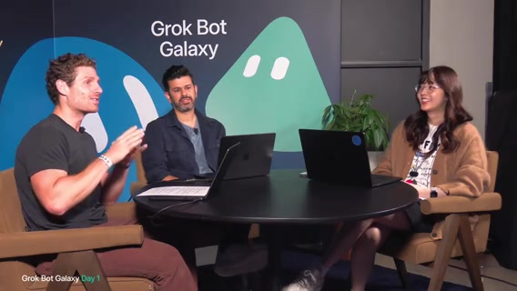
ホスト側 は、「これはプロダクトプロジェクトというより、3日で会社を作る」と宣言。イントロ・背景・ラン・オブ・ショーから開始。
画面では、円卓スタジオ、3人が椅子に着席。背景に「Grok Bot Galaxy」ロゴと緑のボットマスコット。左下オーバーレイ「Grok Bot Galaxy Day 1」。
メンバー自己紹介（第1ラウンド）
Lauren（X: potato） は、Grok Bot 関連の仕事。基本AI / プロダクト寄り（聞き取りやや不明瞭だが自己紹介）。Motion は、Grok Bot / 基本AI、主にプロダクト。興奮気味。
Matt（聞き取り: my calmer → 後で Matt Palmer と名乗） は、Developer Experience。今後数日は サンフランシスコのスタジオからライブ。Moscone Center 近く、Dreamforce 開催中。
ビジネス構築の全工程を共有。Grok Bot と xAI 系の最新AIツールで進める。ミスもそのまま見せる。「まだ何を作るか決まっていない」として、アイデアはこれから。
構成と Grok Bot 101 への布石
3日間ほぼこの部屋にいる。カオスになりうる。xAI チームメンバーへのカットもあり。Grok Bot とは何か・仕事/生活への使い方を共有。
最初のセッションは Grok Bot 101。初心者向け。Roman と Amrita（音声: Rita / Emerita）が案内。「初めてだと Grok Bot は intimidate されがち」「新しいコンセプト」。
ラインナップはエンジニア / プロダクト / セールスなど多様。日常ワークフローにどう入るか感じてほしい。Matt は、自分は主に個人オートメーションとエンジニアリングで使ってきた。チームやマーケットリサーチ用途はあまりやったことがないので学びたい。
他人の使い方を見るたびに「その使い方思いつかなかった」と気づく、と複数人が同意。
コンテスト発表（Starship / Starbase）
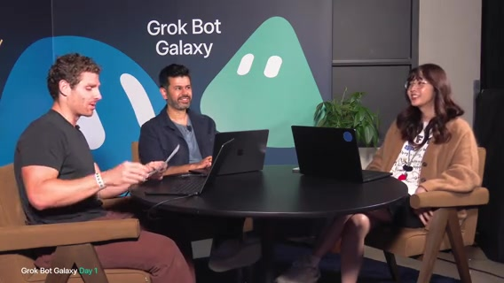
Matt は、紙に書いた「超重要アナウンス」として、賞品がある。Grok Bot Galaxy live stream challenge がライブ開始。
賞品は、Starship 打ち上げを見に Starbase へ行く旅（本人＋ゲスト）。Austin / Starbase 言及（音声ゆれあり）。ジョークとして、「彼女が一番喜びそうなのは Starship 打ち上げに連れて行くこと」。
準優勝は、Hawthorne の SpaceX ロケット工場ツアー（Bay Area）。参加条件の骨子は、@grok と @bot アカウントをフォロー。エントリー締切 September 29。詳細は公式投稿。
やることは、Grok Bot を仕事にどう組み込んだかを共有。公式ポストを quote し、ボットの説明＋共有テンプレートリンクを添える。x.com/grok に打ち上げ映像なども出ているのでチェックを促す。
趣旨：AI が「暇な仕事」から解放する
レイアウト・コンテスト説明は一段落。これから「何をするか」と各自の背景を深掘り。ゴールは、AI でもっと物事を終わらせること、より重要には 時間を取り戻すこと。
Excel 掘り、昨夜のメッセージ探し、コードの手作業、スライド/デザインなど「ずっとやってきた退屈な仕事」から解放。キーメッセージは、「AI frees you up to do the stuff you care about」。
「company とは何か」を後で定義する。ネット上ではスタートアップ／数十億ビジネスなど解釈がバラバラ、と冗談。誰かに「SpaceX を作れ」と言われたが、ロケットはもうあるので別のことを、と笑い。
Matt Palmer（DevRel）とお気に入りデモ
Matt Palmer — Developer Experience / Developer Relations。チームに Rob, Eric, Milo 等（聞き取り）。日常は、ユーザー教育、新技術の教え方、コンテンツ制作、軽いエンジニアリング、ドキュメント、ライブ配信セットアップ、Twitter でプロダクト理解。
Motion へ: 最近のお気に入りデモは？Matt のデモ: X bookmarks を Grok Bot が見て、気になった npm パッケージ等を拾う → Cursor cloud agent を起動して試作 → プレビュー配備（Cloudflare 等、聞き取りやや不明）→ 毎朝「ブックマークの技術＋デプロイ済み版」をメッセージで受け取る。
Twitter に手順ウォークスルーあり、と案内。
Motion（プロダクト）— zero-to-one
Motion は、xAI のプロダクト。ここ数ヶ月〜1年で「誰もがビルダー」になってきた感覚。顧客フィードバックをプロダクトに取り込むこと、Grok Bot marketplace のコネクタ拡充、次の frontier を考える仕事。
既存プラットフォームの延長ではなく、ゼロから事業/エンティティを作れるのが珍しくてワクワク。データ探し、世間のアイデア、ユーザーリサーチ、インタビュー設定など、プロダクト開発プレイブック一式を回す。
designer bot / marketing bot などを作り、どう協調させるかも楽しみ。
Lauren（potato）— パフォーマンスと peestack への布石
Lauren（@potato） は、Grok Bot で「クレイジーでランダム」なことをやる。数週間前のジョーク自動化: X で「potato potato potato potato」と言うと召喚され返事する — メンションが多すぎて Grok Bot で自動化。
エンジニアリングも多く担当。普段は家の「goblin cave」でコーディングしがち。パフォーマンスobsession — アプリをどんどん速くする。
Grok Bot コードベースを、PM やデザイナーでも「デフォルトで良いコード」を出せるよう整備。今回の会社作りでも同様のセットアップをしたい。Matt は、外から見ると Grok Bot のデバッグ文化が分かりやすい。Issue をチャンネルにポストするとどこかで cloud agent が動き出す。
今日も同じツールで会社を始める: 友達3人で座ったら会話場所・ノート・好きなツールでビルド、という感覚。Cursor でコード、Grok Bot で手作業の難しい部分。売るならまずアイデアが必要。
「ビジネスとは何か」定義ラウンド
昨日、視聴者と xAI 社員に「何を作るべきか」を聞いた → 数千件の回答。最初の一手は Grok Bot に回答を読ませてマーケットリサーチ。Day 1 でアイデアを決めたい。
Motion は、「Build something people want」（YC メロディ）— 自分たちも使うものだと共感しやすい。Lauren は、Grok Bot を自分自身の改善に dog food するのが好き。ビジネスアイデアも同じループが欲しい。あと「少しはお金を稼ぐ」こともビジネスの一部では、と冗談混じり。
Matt は、「チームはお金を稼ぎたい」「銀行口座にドルが入るまで本物のビジネスじゃない」と書き出すノリ。dogfooding / testing / something people want を列挙。
人間中心・物理世界・Dreamforce の街
Matt は、ターミナルにオンラインな自分たちでも、ビジネスの本質は serve humans。エージェントに頼むのも人間。Tシャツ通販でも Grok Bot 開発でも、最終的には人間の体験。視聴者が「魔法」や価値を感じるものを。
Lauren は、Grok Bot に Stripe / カード連携でクレジットを渡せる。人間もボットも買えるものを作るのは面白いかも。視聴者のボットが何かを買う、という遊び。デジタル製品か、コーヒー豆配送のような物理か、対面か。
SF は Dreamforce で街が大変。約5万人追加、通り封鎖、到着も難しかった、との現場感。Matt の個人ゴールは、デジタルをリアルワールドに manifes t し、視聴者も触れられるもの。ただし可能かは未知。
カジュアルに、ハイもローも見せる。エンターテイニングであってほしい。
ツールスタック議論（Slack / Notion / Linear / peestack）
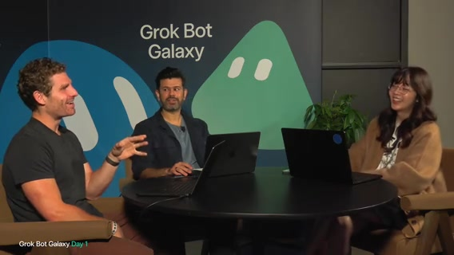
Motion は、チーム用 Slack、ボットも入れるチャンネル、Notion、チケットは Linear？ 検討。Lauren は、Slack 上でバグ報告→自動修正の方が、Issue 開くより速いのでは。バックログが溜まったら別途。
Slack をコントロールプレーンに。issues チャンネルへ factory を配線、と Lauren。Matt は、Lauren は有名な peestack（音声: peace stack / peace packet）の作者。視聴者向けに説明を依頼。
Lauren は、peestack は「百万ドルのプラグイン」ではなく 無料オープンソース。自分が厳しいエンジニアリングで使う skills/workflows を再利用可能にしたもの。長い反復の末、先月 約2,500 PR を本番に入れた（バグはほぼ無い…はず、と冗談）。Grok Bot marketplace で peestack を検索して試してほしい。
Matt 計算: 2500 PR/月 ≈ 83 PR/日。3日なら 250 PR。メーターを付けよう、と盛り上がる。Lauren: PR を開かず main にマージする、と宣言。commit meter 案。Matt は、「2000 PR」は誇張ではなく、肩越しに見たことがある。Grok Bot アプリ自体が社内でこうしたツールで高速イテレーションされている。
当面スタック感は、Slack + Notion（+ 必要なら Linear）。支払い系は Stripe / Link との親密度に言及。ホワイトボード欲しい、カプチーノ欲しい、トークン大量に必要、と現場トーク。
セットアップ実態：チーム・空の GitHub org・ボット雇用計画
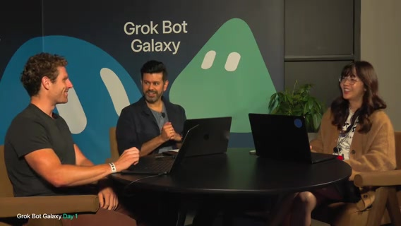
Motion は、すべてを Grok Bot で駆動する計画。この3日専用の新しい Grok Bot チームを作成済み。各自がボットチームを持ち、画面共有で見せていく。別事業/エンティティとして扱う。Matt: 完全に空の GitHub org を用意。名前は 「ship by Thursday」。今は何も無い。後でオープンソースやイースターエッグも。
ブランクスレートは、GitHub org + ボットゼロの新規 Grok Bot アカウント。peestack インストールから開発セットアップを見せる予定。マーケットリサーチ用ボットや marketplace テンプレートも活用。founding engineer bot / intern bot を「雇う」。
Lauren は、Matt の毎日プロトタイプ案のように、捨てプロトタイプをボットに作らせて可視化したい。Matt は、「Grok Bot って何？」な視聴者向けに 101 がすぐ来る。メタに言うと、ボットがボットを作れる。
案は、会社ドキュメント（原則・プロセス）→ onboarding / bot factory がその doc を読ませて社員ボットを生成。state of the company をボットが更新。共有ナレッジベース。休憩後: プロトタイピングとマーケットリサーチ、まず 45分で hiring plan（ボット雇用計画）。画面共有はまだだが環境は接続済み。
会社を始める前にやった唯一のこと: Grok Bot をダウンロード（冗談めかし）。
ハウスキーピング再掲 → Grok Bot 101 へカット
再掲は、72時間で会社、まだほぼ何もしていない（この20分は雑談だった、と自虐）。Galaxy challenge 再案内（Starbase / Hawthorne）。
ビジネス定義の要約: people want / create value / human touch。ゲストは、好きな会社の人、ネット上の人、xAI 社員のワークフロー紹介。クラウドの知恵も借りる。
時々ただタイピングして沈黙する時間もある（Primeagen 系配信へのオマージュ言及）。X でフィードバックを、チャットにも書いてほしい。リアルタイムで舵取りに使う。
同時視聴 約8万人（音声: 80,000）と興奮。Grok Bot 未導入ならインストールを。無料トライアルあり。プラグイン・テンプレートも配る。
連続ライブはおおよそ 8:30–6:00（時刻表記ゆれ）。ワークショップへカットあり。有料コース不要、このストリームがコース。誰かの上司が「30時間全部見ろ」と命じた、との逸話。
Roman と Amrita へパス。Grok Bot を実際に作っている人たち。カット／接続待ち（無音〜つなぎ、約30秒）。
Roman: AI のフェーズ論（チャット→コパイロット→同僚）
Roman は、Grok Bot の成り立ち。AI が仕事を変えたフェーズ:
- Chat — 質問して答えが返る（リサーチ等）
- Copilot — 隣でタスクを委任、スライドを一緒にイテレート等。
- Teammate / colleague — 会社内の同僚のように振る舞う（今が端境期）
その先: AI 同僚と人間同僚が協働。タスクの A→B 委任ではなく、outcomes と responsibilities を持つ。会社の discrete な領域を信頼して任せる。Grok Bot はその発想から生まれた、とつなぐ。
Roman: プロダクトの3つの柱
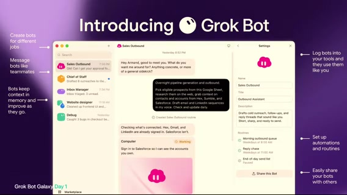
他のAIツールと違う設計選択を説明。画面に UI デモ。
画面では、左に Sales Outbound / Chief of Staff / Inbox Manager 等のボット一覧。「Create bots for different jobs」「Message bots like teammates」「Bots keep context in memory」「Log bots into your tools」「Set up automations and routines」「Easily share your bots」。
柱1 — Teammate paradigmは、タスクごとチャットではなく、仕事単位・役割ごとにボットを作り、何度も戻る。数週間前の「スライドはこのフォーマットが好き」を覚えていて次のデッキに反映 — 同僚に期待すること。例は、Sales Outbound、Inbox Manager などレーン分け。
柱2 — Own computerは、直接連携 / MCP / API だけでは100%終わらないことが多い。ボットは自分のコンピュータを持ち、動画視聴・ポッドキャスト・90年代の古い政府ソフトのクリック等、人間がPCでできることを実行。統合＋コンピュータで「ほぼできた」ではなく終わった感覚。柱3 — Cloudは、ローカルPC依存だとスリープ/蓋閉め/電話からのキックオフが破綻。クラウドの同僚ならどこからでも。
要約は、同僚感 × クラウド常時 × コンピュータ操作。
コーディング革命 vs ナレッジワーク、シンプルさ
コーディングでは過去2年で開発者の仕事が激変。手書き1行から、xAI 内では outcomes/direction を持ちエージェント群を steer する姿へ。ナレッジワークは 2024/2025 比でまだ大差ない。Grok Bot で会社内の実仕事にモデルを最大化したい。
delightfully simple — 簡単に始め、徐々に複雑な能力へ引き込む。簡単なタスク→野心的タスクと限界まで試す。モデルは賢くなるので安全な実行環境を。always on、眠っていてもPCが閉じていても仕事を終わらせる。次はチームでの共有AI同僚・社内ツールの未来。Amrita へパス。
Amrita: アジェンダとライブデモ方針
Amrita は、今週はエンタープライズ向けセッション多数（GTM / engineering / marketing / admins）。今日はライブデモで、Roman の言う「同僚エージェント・自前コンピュータ・メモリ学習」を見せる。登録は x.ai/galaxy（音声）でセッション確認を。
会場に「Grok Bot 使ったことある人？」として、初めての人もいる想定。今日の3ボット: Data Dan / Slide Sonya / Email Ethan。
流れとしては、ユーザーデータ収集 → スライド/チャート作成 → 外部ステークホルダーへメール。ネイティブ MCP/API が無いツールもコンピュータ利用でアウトソース。
Data Dan 作成・Voice で Google Form
Grok Bot を開き、見た目はメッセージングツールに近いと説明。Email Ethan / Slide Sonya は既に準備。今日はゼロから Data Dan を作成。ボット名から用途を推測してくれる。選択肢「What do you mainly want me for?」が出る。
Google Form 作成を依頼する理由: Form 作りは嫌われがちだが、従業員/顧客/ユーザーリサーチの定番。Qualtrics 等でも同様に頼める。Voice mode で指示: 「1日何杯コーヒー飲むか」「SF のお気に入りコーヒーショップは？」。選択肢例として Ritual、Sightglass、Blue Bottle（音声: ritual / cyclists→Sightglass? / blue bottle）。
Voice mode は社内で双方向（ボットが話し返す）もデプロイ中。一般公開は「来週頃」希望、と。今は speech-to-text を見せている。送信直後に作業開始。Google Form ではボット自身のコンピュータを使う。右上から Linux VM に入れる。Google Slides/Forms/Docs 等にログイン可能。
質問の構築をライブ監視できる。
MCP / 承認 / Teach a task（Slide Sonya）
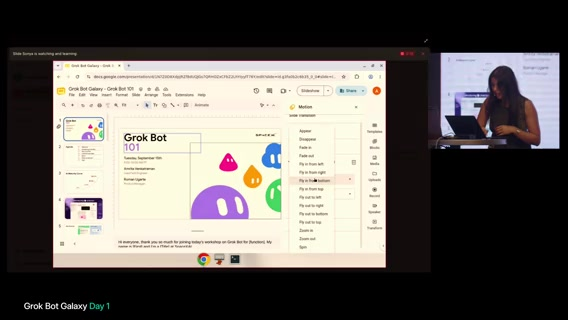
組み込み MCP / plugins 一覧を見せる。タスクに応じて管理。無いものはボットにセットアップ依頼も可。ボットがタスク実行の承認を求める例。「Allow」。後でルール（メール送信前に必ず許可、外部 Slack 前に承認等）を説明予定。エンタープライズの制御に重要。
Slide Sonya は、既に編集対象スライドがコンピュータ上にある。自分で編集も、Teach a task で教えられる。Teach a task は、人間がボットのコンピュータを操作してアニメーション追加（Fly in 等）を実演 → 録画が skill になる。以降「あのアニメーションを」で再現可能。
画面では、Google Slides「Grok Bot 101」、通知「Slide Sonya is watching and learning」、発表者 Amrita /（スライド表記）Rianna Ugarte 等。
QR・承認ルール・隔離VM・Routines
Data Dan の Form 進行を確認しつつ、エージェント間を行き来。完成後は QR コード化して会場にスキャンさせ、回答を Sonya → Email Ethan へ渡す計画。トップコーヒーショップのオーナーに分析メール、というデモ筋。応用例: 1万人オンサイトの食事制限を集めるイベントプランナー、顧客調査のリサーチャーなど。
Settings のルール例: 「明示許可なしにメール返信するな」「スライド作成は自動許可」など、粒度の高い制御。長時間タスクの安心感。各ボットのコンピュータは隔離。Data Dan の Form 作業が Slide Sonya のスライドに干渉しない。同じデッキを人とボットが同時編集しても衝突しにくい（スライド1–2をボット、10–11を自分、等）。
Slide Sonya の description: フォント/色、完了後にスクリーンショットを送れ、など明示指示で一貫性。Routines は、毎朝、スライド変更の要約と誰が変えたかを報告（共有デッキ監視）。複数ボット横断ルーチン例: 週1で変更サマリを上司へメール（Sonya + Ethan）。
Email Ethan・トーン学習・下書きルール
Form は承認が多く「カメラを意識してる？」と冗談。完成後 QR、結果はボットのコンピュータ上の Google Sheet へ。外部向けリンクはいつも Grok Bot 製 QR を使う、と Amrita。
作業中にボットのコンピュータで他の Form/Sheet を覗ける。遅い/違うときは自分で操作して再度 teach。Email Ethan は、Dan/Sonya のデータをまとめて外部ステークホルダーへ。既存メールを読ませてトーン/スキル化。
例は、Jason D’Amour（画面表記）へコーヒー習慣データのメール下書き。Drive からノート取得、Gmail 再接続が必要な表示など。ルール追加: メール送信/応募系は必ず先に聞く → Auto-review でブロック可能に。
エージェント間メッセージ（A2A）
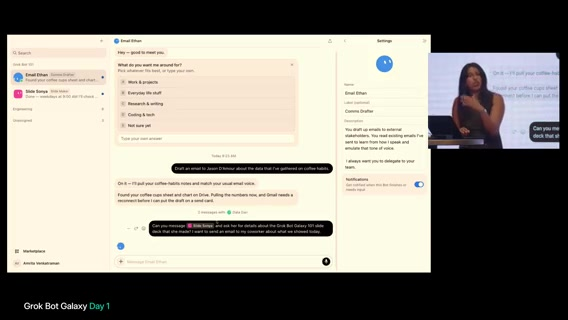
エージェント同士の会話デモ。description で「常にチームへ delegate」（Chief of Staff パターン）も可。Ethan に「@Slide Sonya に Grok Bot Galaxy 101 デッキの詳細を聞いて、同僚へメールしたい」と明示メンション。
画面では、Email Ethan チャットに Data Dan とのメッセージ数表示、@Slide Sonya メンション。右側 description「I always want you to delegate to your team」。
Ethan はコーヒー関連では自発的に Data Dan へ、スライド詳細は明示指示で Sonya へ。長期ペルソナ＋メモリ: エンジニア向け/セールス向けデモでも同じ。Ethan を1年使い続ければ全メール文脈を学習、Sonya は「スライド一般」の専門家としてスコープ変更可能。
Grok Bot 観: 自分の会社＝エージェントチームを作り、プロジェクト分割か専門性分割かを自分でオーケストレーション。Ethan↔Dan: 「まだスプレッドシート作業中」「既存のサンプルデータで進める」等のやりとり。
Ethan↔Sonya: 簡潔なブリーフィング要求 → Sonya「デッキ全体をスキャンしてアウトラインを渡す」。agent-to-agent protocol。人間はマネージャー/監督に回り、細部に入らなくても仕事が終わる。Roman の言う「finished work」（スライド・下書き・Form）。
Computer use・飛行機Wi-Fi・Auto-review
Form は「1日何杯」「SF のお気に入り」質問と選択肢追加中。速度はモデルと computer use の改善次第。今後数週間で Grok Bot / Cursor / xAI 周りで computer use がホットトピックになると予告。
Linux VM は軽量で起動しやすい。Amrita: 飛行機の悪い Wi-Fi でも、ボット側 VM のネットが速いので computer use をアウトソースする。MCP が無い Google Forms / Qualtrics 等向き。外部サービス接続は常に許可確認。画面例: エージェントがメール返信しようとして 個人の auto review ルールでブロック。「Allow once」で下書きへ。
下書きを見せてから送れる。同じことを何度も、という話の途中で 1:00:00 区切り（本セグメント終了）。
101 後半・スタジオ復帰・Marky／Pop-up OS
seg02 · ストリーム 1:00–2:00
Emailエージェント複製とテンプレ共有
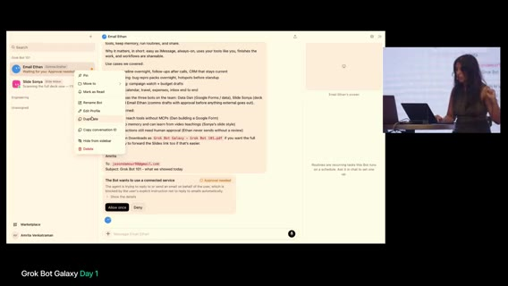
Amrita（Grok Bot 101 続き） は、Email エージェントは複製して5〜6体持てる。ステークホルダー別に使い分け。例は、幹部/CTO/CFO向け、一般 Grok Bot ユーザー向けフィードバック、社内チーム向け——それぞれトーンを変える。
複数戦略を試すのに複製が有効、と説明。Share as template は、ボットをテンプレとしてチームに共有 → multiplayer 側面。
チーム全体で同じテンプレを使い、各自がユースケース向けにカスタム可能。
Marketplace・ブランド一貫性・メール下書きUI
Marketplace の featured / public ボット例: Cursor 出身の Lauren、Clare（聞き取り: Clarevo）、Lenny、Eric の公開ボットを自分のエコシステムに取り込める。自社向けにボットを publish して一貫性を保つ。
例は、デザインチームの brand design bot — 色・フォント・タイポを揃えて1つ公開し全員が使う。更新は最新版が伝播。「まだ共有してない人は share as template を」と促す。
Email 下書きの モーダルUI: 宛先変更・削除・言い換えを Grok Bot 内で完結。Gmail の下書き一覧を漁らなくてよい。Cursor ではアウトバウンドメールの多くを Grok Bot 経由。Slide 系エージェント等から文脈を取り込んでメールに反映。
コーヒーForm→QR・Sections・グループチャット
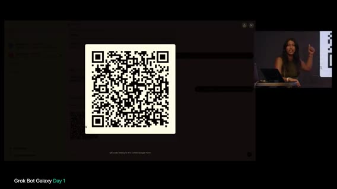
Data Dan のコピー Form が完成。「QRコードにして」と依頼。残り約10分で回答→美しいスライドに入れて 101 デッキへ、と予告。会場＋リモートでお気に入りコーヒーショップを共有する狙い。
Sections でボットを分類。Unassigned と、エンジニアリング用セクション。セッション用エージェントと分離しやすい。ボット同士の グループチャット も作成可。1対1メッセージとの違いは主に可視性 — やり取りを一画面で見る。
Email Ethan / Data Dan / Slide Sonya を同じグループに入れて「hello」デモ。Auto-review のセキュリティチェック不要なケースにも触れる。
ボットが拒否・質問してくるときは teach / guide のサイン。例: 「姓名ではなくファーストネームだけ使え」→ memory に永続。
QR公開トラブルとデバッグ文化
QRコード表示。会場＋ライブ視聴者にスキャン依頼（コーヒー杯数・店舗）。「No access」として、スキャン不可。Data Dan に「リンクを public にして」と依頼。
後続セッションで field engineer としての Grok Bot デバッグ を話す予定、と予告。うまくいかない理由＋うまくデバッグできたときの検証フィードバックを与えるほど精度が上がる、と助言。
ボットが共有設定を直しに行く様子を実況。
グループ委任・依存関係・Managerオーケストレータ
グループチャット内で各エージェントが自分のスイムレーンを保ちつつ互いの能力を理解。指示例は、Slide Sonya にコーヒーのテストスプレッドシートからチャートを最終スライドへ → 完了後 Email Ethan が Jason へメール。
1対1委任も可能だが、グループだと委任の流れが一覧できる。Ethan は、サンプルデータは把握済み、Sonya のスライド待ち、と依存関係を理解。
エンジニアリングでも依存把握で merge conflict 回避に効く、とコメント。トラブル時は「望むアウトカム」から逆算して伝える。詳細不足だと失敗から学べない。
Orchestrator / Chief of Staff / Manager エージェント案: Ethan・Sonya・Dan から進捗を集め、人間が監視しなくてもよい。Manager にルーチン: 例「2時間おきにチームへ更新を求め、ブロッカーを確認」。
Data Dan が Form 共有で詰まったら Manager が検知し Sonya 等へ周知、というオーケストレーション層。
会場Q&A① 承認・Auto-review・信頼構築
Data Dan をフォローしつつ、リモート視聴者は Matt / Motion / Lauren の会社づくりも見てほしい、と案内。Q&Aへ。質問（会場） は、メール送信・支払い・外部へのデリゲートなど、危険なアクションの能力をどう考えるか。
Amrita は、Auto-review — 裏で分類器がリスク判定。ベースライン＋ユーザー定義ルール（例: デスクトップにフォルダを作るだけでも毎回聞け）。デモ中は Form 作成でも PHI/PII を確認するなど、過剰に慎重なこともある。
フォロー: どう信頼して止めさせないか。→ memory で「この文面は今後聞かなくてよい、送ってよい」と学習させられる。通常は毎回 Form 許可を求めない、と補足。
Q&A② Slackマルチプレイ・社内システム・Computer use
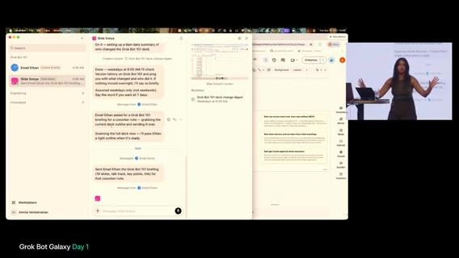
質問: グループチャットに人間も入れてボットと協働できるか。類似機能開発中。現状は Slack で @bot し、スレッドに複数人が追記できるイメージ。Grok Bot 内のマルチプレイ UI は近日。
質問: エンタープライズで VM から社内ツールへ。ボットのコンピュータはロックダウンも開放も可。例: MongoDB 資格情報、社内 VPN 参加。
1Password 連携を最近リリース。セキュアな資格情報取得。質問: Teach / ビデオ学習はスクショか。
各エージェントが自分のコンピュータを持ち、スクショ・Form・スライド・PDF 等を作成。クラウドなのでノートPCを閉じても継続。Teach a task は、動画を見てアニメ追加手順を学習 → skill として保存し再利用。
Marketplace再訪・コンテスト・1Password・Memory
Marketplace は公開テンプレ/ボットあり。電話・ノートでも同じ公開ボットが見える。チャレンジ再案内: ボット説明＋リンク共有で Starbase / Starship 打ち上げ観覧のチャンス（音声ゆれ: Starlink→Starship に訂正）。
質問: 1Password はボットVM上でサインイン？ → モーダルが上がり、API/環境シークレットは Grok Bot 側で安全保管（外部に露出しない）。質問: Memory の編集・忘却・キュレーション。
Memory は S3 上の長期永続。忘れてほしいことは指示で更新。削除済みボットへの委任などは手動で memory 更新が必要。ボット複製は同じペルソナでも fresh context / fresh memory（ゼロ記憶の新人）。
まとめスライドと 101 終了
学びのスライドを再掲。最大の助言は「まず試せ」。「一日で一番面倒な仕事」を Grok Bot に渡す発想。Form・アウトバウンド・feature flag 掃除・サポートチケット等。
人格付きエージェントで仕事の一部を任せ、空いた時間をデモやコーヒーへ。まとめ3点（音声） は、(1) ボットは MCP外のツールにもコンピュータ経由で届く（Form / Qualtrics / VPN内）— アウトカムから逆算 (2) Memory（動画 Teach→skill、長期ドメイン専門家） (3) 人間承認（エンタープライズ向けに危険行為を防ぐ）
Amrita 終了・感謝。短い休憩（Be right back 画面）。
スタジオ復帰・Run of show・Peter Yang 紹介
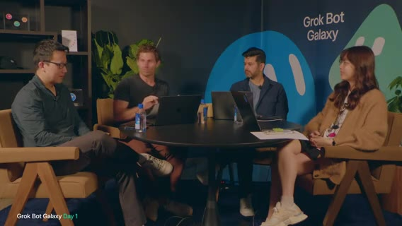
「And we're back」。Matt 側: さっきは Amrita / Roman の Grok Bot 101。今日はセッション＋対面ビルドのミックス。101の間にコーヒー・水・Slack 作成など。次ブロック前に概要。
予定: Grok Bot for Engineering（12:30 PST 帯、興奮気味に「無料で配ってる」ジョーク）、Grok Bot for PMs（2:30、Kevin）、Grok Bot for Founders（5:30 夕方）。ゲスト Peter Yang 紹介。元PM十数年→実質リタイアして YouTube / 実践的AIインタビュー・チュートリアル。Grok Bot で一人会社を運営、「一日中ボットと話す」。
ニュースレター（音声ゆれ: Behind the crap → 文脈上 Behind the Craft）。読者は多いがボットではない、と冗談。これからの流れ: ゲストと雑談しつつプロダクト構築。まず「社員＝ボット」を雇う話へ。
セットアップ共有・Marky McMarkface 誕生
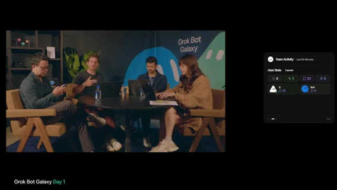
Motion は、101中も完全サボりではなかった。GitHub org ship by Thursday（まだリポなし）、Slack（人間＋ボット会話用；xAI Slack での日常に近い）、Notion（ハンドブック/オンボーディング案）。Lauren は、ノートはあまり取らない。スクラッピーに速く動く方が良く、docs はすぐ陳腐化する。
ボット雇用へ。Motion の Grok Bot はほぼ空 — Marketplace から X MCP だけ接続済み。Peter とオフカメラで話したユーザーリサーチ／VOC から入る案。Market research bot を雇う。
AV問題あり、画面共有復旧中とアナウンス。101と同じ手順で新規ボット作成中。Peter は、面白い名前を付けろ、と。「Market Research Bot」は却下。チャットに名前募集。
昨日 X（と xAI Slack）で「何を作るべきか」と聞いた数千メッセージをボットに読ませるのが第一歩。チャット案 Marky Mark / Marky Markface 採用（後に画面表記 Marky McMarkface (Product Research)）。
会社名ネタ・画面共有復旧・リサーチ開始
X ハンドル確認: potato / Maddie P（Matt）/ Peter G 等。本番から画面共有用リンクのメモ。「会社づくり中だから完璧じゃない。AVも含め作りながら」と前置き。
会社名議論: 現状 Ship by Thursday。Potato lab 案。ミーム向きの名前をボットに提案させる案。画面共有復旧。空白の Grok Bot＋ Marky McMarkface＋X プラグイン認証済みを再掲。
プラグインでシステム接続が楽。Featured ボットも後で導入予定。Lauren の Dr. Eggbot（音声ゆれ: Eichlott）登場予告。Marky に「最近の投稿への返信からビジネス案をまとめろ」と依頼（インフィニティミラー／自分の配信が自分の画面に映るジョーク）。
Peter に PM としてのリサーチの考え方を質問。Amazon風: 顧客は誰か / pain / value。「視聴者みんなのために作る」。クールな技術デモと、Slack作成・画面共有修正など事務作業の自動化の両方を見せたい。難解すぎず「人を助ける本物のビジネス」に接地。
アクセシブルな顧客像・Grok Bot ポテト・ステータス催促
Lauren は、AIコーディングに詳しくない人（例: メールも怪しい母）でも理解できるビジネスが面白い。「母が見てたら分かる会社を」と冗談。Peter の自作アイデア投稿（Grok Bot 風フィジカル／グローアイ等のジョーク）を画面で紹介。「いくら払う？」と茶化し、中国工場ネタ・中でポテトを焼くネタ。
エージェントがスレッド探索中。コツ: 「3分ごとにステータス更新」を指示／割り込みで方向転換。nudging が効いた、と実況。
Xフィードバックのテーマ読み上げ
テーマ一覧: Not another SaaS demo — フィジカル／ローカル／非テック顧客（塗装会社など）。スタジオ塗り替えジョーク。コンシューマで楽しいもの・pets 多め。チャットのクリプト／ミームコインは却下。Neopets / Club Penguin 的レトロ復活は好評。
「会社を作る会社」として、エージェントで人のゴール達成を助けるメタ案。Motion はプラットフォーム／クリエイター支援が好き。スモールビジネス・レストラン・非テック層。事前登録約 7万人＋現視聴者向けに「退屈な週次作業」を自動化する案も。
具体ピッチ例: インディー作家のブックマーケティング、造園／樹木サービス marketplace、ポケモンカード marketplace、気候、ディナー配達、M&A advisory 等。チャットで Club Penguin 再熱。
ゲーム談義からエージェント・オーケストレーションへ
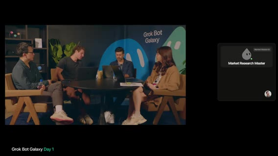
Peter は、子供の頃好きなゲームは？ Lauren: FF14 の小さな種族キャラがポテトっぽく、ハンドル potato（通常拼字は取れず E 付き）由来。Motion は、Age of Empires 等ストラテジー。オーケストレーション好き。Starcraft までは深追いせず。AoE / Factorio / Starcraft 好きはエージェント使いが上手い、という話。
Matt は、PS2 / GameCube / Wii、Smash、Battlefront、Tony Hawk 等コンソール寄り。Peter は Starcraft 派 — ボット操作はゲーム感覚、という同意。Motion は、昔の長い PRD／Notion ブリーフから、今はボットをプロンプトして書く・作る側に回し自分はオーケストレータ — 仕事がゲーム化。
Lauren はプロダクト仕様をほとんど読まない／書かない文化。エージェント時代の挑戦: xAI Slack ステータス常時 「why not today」 — 入力欄に呪文のように打てばボットが作る。Issue より PR、詳細 PRD より触れるプロトタイプで議論。
レストランOps・ユーザーストーリー・リアクション学習
Motion が方向性をボットに渡し、案として Neighborhood restaurant ops assistant。コードが安い今こそ user stories をシャープに。Day-one デモ案もボットが自発提案。例は、朝の予約・メニュー状況ブリーフ、オーナーのレビュー管理、家事／週次の痛み、コントラクター手配、ボランティア調整など。
Lauren は、ローカル／Bay Area のフィジカルとテックの橋渡しが欲しいが、配信ブースから実店舗支援は難しい、とも。ハート（いいね）リアクションをメッセージに付けるとボットが「Matt がそれを気に入った」とフォローに取り込むデモ。Matt も別途 market research bot を作成。テンプレ共有でも可。
ライブではタイピングが大変なので Voice で「レストラン案を深掘り、対面要素とブースからの橋渡し（ポップアップ等）」と口述。セグメント: これから店を始めたい人（まずポップアップで検証） vs 既存店の効率運営。
Pop-up OS・役割分担・Dr. Eggbot／プロトタイピング
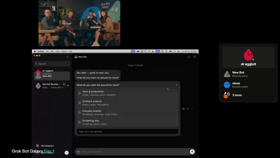
Matt も X コネクタをその場で追加（プラグインほぼ未接続からのライブセットアップ）。案 は、Pop-up OS for restaurants — 期間限定コンセプトを回す OS をライブ構築、実シェフが顧客。苦戦中の SF 店支援、体験型ディナーシアター、チケット制 supper club。チケット／予約／参加者テーブル確保が面白そう。ボット提案の「ベストコンボ」: Pop-up OS＋実際の SF レストラン1店舗。
解釈: バックエンド（イベント管理・支払い・サインアップ）を作り、場所・シェフ・店と組んでポップアップ開催。プロダクト出荷＋オーナー支援＋試食体験。Lauren（エンジニア視点） は、イベント管理・決済・予約は技術的に面白い。時間枠・座席レイアウト・人数・電話/オンライン予約。
「プロトタイピング開始」。peestack 導入、ランディング（Dreamforce 近辺の SF お気に入り店ポップアップ等）。Lauren 画面へ切替準備。AV のスクリーン共有リンク待ち。分業案: 地元店への GTM／prospecting bot、Notion にブレインダンプ、peestack プロト、Peter が方向づけ。
必要作業の骨子は、料理できる人を見つける＋食べたい人を見つける＋ポップアップ物流。ボットが実人にリーチする。Motion は、prototyping bot を新規作成。「Cursor でランディングページプロト」へ。Lauren: Dr. Eggbot を入れる？ — peestack ベースで高品質ボットを作るための自作ボット、と説明。画面に Dr. Eggbot / Steve bot 等が見え始め、2:00:00 区切り。
Pop-up 構築・Peter／Cody・デプロイ
seg03 · ストリーム 2:00–3:00
方向合わせ：レストラン／Pop-up vs 対面ビジネス案
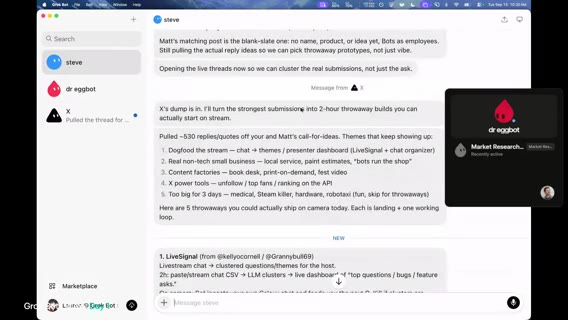
Lauren 側: Steve が call-for-ideas を整理。他案もあるが、レストラン／Pop-upでプロト開始したい。Motion が大量ワークフローを回すなら別、とも。Motion は、対面ビジネス案でフィルタ。ポテト／チップス／フライ系レストランのリサーチも冗談交じりに提案。
分業: prospecting（見込み開拓） と building（構築）。Divide and conquer。デザイナー bot を入れ、プロトをレビューさせる案。Lauren はデザイン bot を探す。
チャット視聴者のボットを雇う案。Lauren のサイドバーは寂しい: X プラグイン bot、Steve（メイン／デフォルト）、Dr. Eggbot（剛導入）。Steve の対面会社案: paint shop、local service、piano tuning、AI＋建設／trades、billboard／屋外サイン。3日では難しいもの: hardware、recycling、festival 系、robotaxi 等。
合意: pop-up idea（プラットフォーム）に寄せる。GitHub・Notion は空。Lauren がビジョンのシェルをプロト。
Dictation→ランディング・Prospecting bot・Steve＝CoS
Lauren は、dictation（音声入力）で方針を Steve に流し込む。「pop-up platform startup」を口頭で定義。Dr. Eggbot と小さなエンジニアリングチームで、loose／scrappy な検証プロト。最初は DB 不要 → Google Sheet でも可。
まず landing page＋サインアップ。ノイズ交じりの口述を編集しつつ Steve に「pop-up 用 LP を作れ」と依頼。Motion（並行） は、Dr. Eggbot 導入。「prospecting bot が必要」と口述 — レストラン pop-up の実現可能性調査、店と来客の両方を探す。ソースは X／視聴者の知人シェフ、提出用サイト、電話・メール等。
Dr. Eggbot が prospecting bot 作成中。画面に作成中ボット一覧。チャットでも追える、と案内。Steve はテンプレではなくデフォルト bot。Dr. Eggbot の強み: 既存ボットを横断して改変できる。
Lauren は、Dr. Eggbot に「Steve を chief of staff / executive assistant に」依頼。ボットごとに文脈を持たせ専門化、チーム協業。普段は Steve 経由で話す想定。同時に「プロトタイプ bot を作れ」として、loose な vanilla HTML/CSS、楽しいフード系の名前。
Motion は、公開 GitHub リポ作成（音声: very vocal pop up → 画面文脈 popup）。ライブ後に PR 整理。Dr. Eggbot は must-have、と複数人。
Chat-first・Potato Lab・Grokpot 命名・Prioritizer
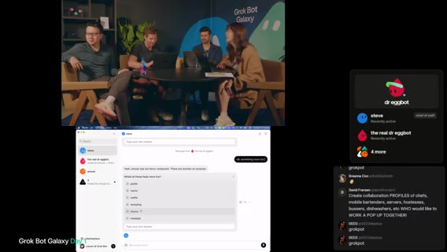
チャット: Dr. Eggbot は自分でインストール可？ → Marketplace で追加可能（Grok Bot 内で前面表示）。「名前が気に入らない」→ 話すだけで全部変えられる（chat-first／malleable）。Steve に新プロト名を尋ねさせるデモ。
Motion は、チャネル設計 — シェフ／スペース連絡手段、スペース調査、メール。会社メール未整備。社名→ドメイン→メールの順。社名案 Potato Lab（フード文脈）。SF のレストラン pop-up、「pop-up as a service」。Grok Bot で空きドメインも調べる案。
Lauren は、プロト bot 名候補をチャット投票 — Pickle / waffle / dumpling / meatball 等。Potato 票多数。Grokpot が好評 → 採用方向。どんな restaurantier が pop-up 向きか — オープン。Grokpot／ボットに聞く。
Motion は、Dr. Eggbot で Prioritizer（優先順位 bot） 作成中。配信・来客・思考が多すぎるので、AI に「頭の中を整理・減速」させる使い方。ボット提案例: ideal restaurantier brief、出荷スパイク、リードマップ、outreach、ゲスト獲得パス。
Lauren は、Grokpot 起動に不具合気味だが自力で続行。プロト前に良質な LP デザイン参照を集め、ほぼ mood board を組む。
Dogfood・二系統LP・口述プロンプト・デザイン3方向
Motion は、デザイン bot 準備済み。LP は「特定店」か「レストラン登録」か。Lauren は、プラットフォーム構築だが、自社でも pop-up を運営して dogfood したい。Motion: 野心的だが「好きな会社は野心的」。ピボットもありうる。
Grokpot が LP ギャラリー候補を提示。方向を数個選んで進める。Lauren が Steve へ長い stream-of-consciousness: pop-up プラットフォーム＋自社 dogfood → LP は複数面（プラットフォーム／オペレーター向け、自社イベント向け、来客向け）。料理内容は未定。まずは場所・作り手・来客の接続。全部のソフトを先に作らず、メール収集など手動からでもよい。
プロンプト技: マイクで数分しゃべったあと「自分の言葉で言い直せ」と確認させる。Steve の要約: 都市でフード pop-up を立ち上げるソフトウェア＋ops；自社でも同じスタックで運営；メガ1ページではなく複数の公開面。Steve の助言: ボトルネックは LP 乱造ではなく first loop — 場所・オペレーター／作り手、来客はその後。
Motion は、そのループ用ソフトが会社になる。テーブル予約前提 vs カウンター／並びの低リフト案。Lauren: シェフ＋倉庫＋体験型イベント寄りも検討中だが、フライ売りカウンターの方が予約不要で楽、とも。早期プロトをデプロイしてネット上に出す瞬間が欲しい。3方向のデザイン案（暗いプロダクト風／コーポレート寄り／もう1つ）。Grok Bot 内で HTML/CSS をそのまま描画 — 外部デプロイ不要。フィードバックで調整へ。
Peter Yang 助言・プロアクティブ化・マルチプレイ要望・退席
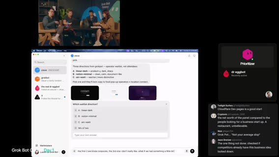
Motion→Peter: ソロプレナーへの良い助言は？Peter は、自分が楽しいことを増やす設計にせよ。儲けるが嫌いな仕事ばかりだと起業の意味が薄れる。
アイデア選び: PM 時代の長い社内議論・文書より、できるだけ早く市場／顧客に当てる。口では良いと言っても実際に払うかで見る。アイデアは安い、チームが重要。今は誰でも作れるが、純粋ソフトウェアだけでは稼ぎにくい — 物理／サービス要素がないと「LP＋DB になぜ金を払う？」になる。最初の1ドルまで検証。
ハードな仕事（レストラン探し・調理等）には金が払われる、という合意。次のゲスト前にロックイン。Peter への parting: 製品が「人格のある人／チームと話している感じ」で好き。Tips: ボットをプロアクティブに — LP 指標追跡、レストラン prospecting、週次 cron／スケジュールで更新を送らせる。番号付きリストで返信しやすい形式。毎週金曜に全ボットがチェックイン。
自動化したい作業を任せ、こちらから聞きに行かずボットが押してくる形へ。Feature request は、なぜ Slack？ 人間が Grok Bot 内のチャネルでボットと協働したい。一人でボットと話すのは寂しい — Lauren や他者とコラボしたい。ホスト: 近日／需要あり、今日は各自が別ボットチームで調理。
Peter 退席。「フライを買う」ジョーク。感謝。
Tater 誕生・Model/Harness・Notion 会社文書・役職ネタ
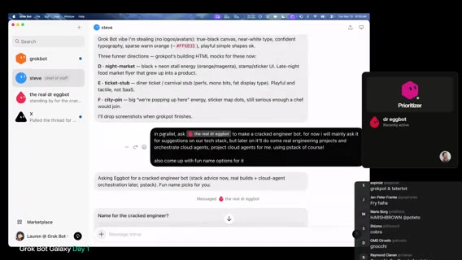
Lauren は、Steve にプロトが bland／boring とフィードバック。Grokpot に新プロト依頼。並行で Dr. Eggbot に correct engineer bot（本格エンジニア）作成 → プロト用 Grokpot と分離。チャットでエンジニア bot 名 — Tater(s) 採用（potato オーバーライド）。
楽しいがデザイン寄りすぎな案も。Motion 解説: Grok＝モデル、その上の harness（実行コード）。Grok Bot は軽量（coding harness 例: Grok Build 等とは別）。本格コードは Cursor（特に Cursor cloud agents）へ寄せ、低→高 fidelity へ進化する、と予告。スタック議論。Lauren→Steve→Tater: Vercel + PlanetScale を意識（両社からゲスト予定のネタバレ）。他は柔軟。Endless tech debate は避け PMF 優先。
Motion は、Notion に合意内容を文書化（Lauren は Notion 嫌いだが自分は計画に有用）。暫定社名 Ship by Thursday（より良い名が出るまで）。役職: Lauren＝CTO、Motion＝CPO（Chief Product／ジョークで Chief Potato ではない）、Lauren＝Chief Potato Officer、Matt＝CEO（grown-up）。やることは、SF でフード pop-up をやり、その経験で pop-up 運営 OS（メタ製品）を作る。楽しさ＝人を集めること。文脈を短く一貫させ、ゲストにもボットにも同じ説明を渡す。
紙のネームプレート遊び（Chief Potato Officer 等）。次ゲスト準備。チャットが Grok Bot アプリのアップデート可用に気づく — 配信中は怖いので休憩で、と。
ピンクLP選定・Slack/Repo・ドメイン案・Vercel接続・配信トラブル
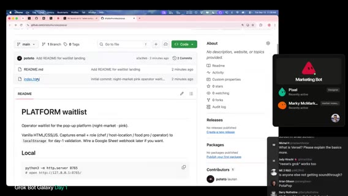
Lauren は、プロト色をピンク寄り／night market 方向で即決。細部より速さ。後で Cursor cloud＋デザイナー bot。数分後にゲスト。その間に cloud agents で FE/BE スタブ、リポにコード。Lauren: 既にリポ作成 → Slack に popup.git（聞き取り）共有。Slack 表示名を Lauren, Chief Potato Officer に。
LP をリポ経由でビルド／ホスト。ドメイン即買いは保留 — まず Vercel テスト、名前確定後にドメイン。マーケ／ブランディング bot 雇用案。CPO がドメイン候補生成。リポにコードが入ればボットが PR を出せる、と Motion。
ドメイン案一覧（音声） は、cleanstall.com、stall.run、nightmarket.app、popup.plates、openstall.co、peanut popup、popetto.com、host the popup.com 等 — しっくり来ない。Notion 会社 doc を共有しボットに文脈投入。Motion は、AI への入力は簡潔で良い情報だけ — 悪い文脈は悪い出力。
Cursor bot を Slack に。Lauren を Vercel org の owner に追加。リポは空だが存在。index.html（インライン CSS）がリポに — 開始時より前進。Vercel をリポ接続し Deploy。認可作業。
Motion は、Ops bot と Creative Director bot 作成中（命名・ハイレベル／オペ実行）。会社運営の地味作業も自動化へ。Vercel 招待メール確認のため画面共有を一時カット要求 → 共有トラブル／「technical difficulty」。別の人がストリーム救済。〜2:39 頃復帰。
デプロイ成功・Notionサインアップ・PlanetScale・ゲスト欠席
デプロイ稼働。main に push で deploy。現状はただの HTML — サインアップ保存先が必要。Google Sheet vs Notion DB（Notion MCP あり）。Flat file 案も。Lauren は、Vercel 接続完了。Steve に「LP はデプロイ済み → Notion にサインアップ用 DB を繋げ」と依頼。
計画修正: PlanetScale（Postgres）希望。Payments は後回し。PlanetScale チーム shout-out／数日中にゲストの可能性。画面共有復旧待ちの口頭リキャップ: Matt＝ops／会社プレイブック；早期 HTML LP；方向＝pop-up 事業／プラットフォーム＋自社運営；DB 統合作業中。
ドメイン未決。Creative Director＋チャットに案を募る。shipbythursday.com が空いてるか確認。次ゲストは来られず — ビルド時間が増える。PlanetScale 資格情報待ち。テーブル設計・依存関係でアンブロックを。
Vercel／メール招待の続き。Lauren→Steve: Tater は今後 Cursor cloud agents を使え、project agent も検討。
Cursor Cloud Agents 解説・shipbythursday 取得・main直push・BRB
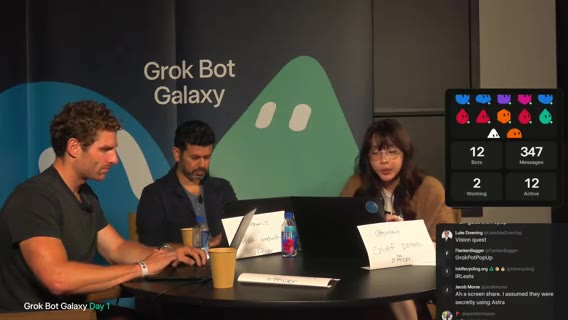
Lauren 解説: Grok Bot＝オーケストレーションに強い；Cursor の harness＝コーディングに強い。Grok Bot から cloud agents を spawn — クラウド VM でアプリ起動・クリック・CPU トレース等。既存リポなら環境セットアップも指示可。Tater に cloud agents／プロジェクト用エージェントを使わせ、長期の技術文脈を保持。PlanetScale 資格待ちの間はローカル or cloud agent マシンで開発し、動画／スクショで報告 → デプロイは後。
Motion は、ship by thursday ドメイン取得済み。会社lander用に配線。製品は別ドメイン。Ship by Thursday＝「会社の会社」。製品の仮タイトルはこれから。Dr. Eggbot で Cursor team kit／skills／peestack 等を入れ cloud agents 接続 → 会社lander用コードへ。
Steve が PR を開いた → 新ルール: 当面 PR 禁止、main に直接 ship（誰かに怒られるまで）。巨大 diff は読まない方針。Lauren は、Tater に加え reviewer bot も Steve 経由で検討。その後 技術的都合でフル画面カット／BRB（〜数分の無音・You 等）。
復帰・ゲスト Cody・ブックローンチ／Pulse・検証助言（途中で区切り）
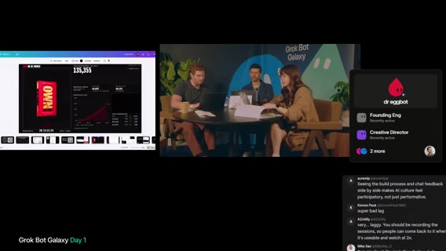
復帰。会社lander着手、Cursor 上で他エージェントも見える、と。ゲスト Cody 参加。ビジネス売買マーケットプレイス＋アドバイザリー；オンライン約 1500万フォロワー規模の話（音声どおり）。チームで Grok Bot 利用中。
画面共有: 今週発売の本のローンチダッシュボード（〜13.5万ユーザー表示）— Grok 等ミックスで構築、Vercel 上。リアルタイム参加者、paid vs organic、チャネル、平均注文単価等。別画面 Pulse: 事業の見方／ピッチ／低利益レバレッジに基づく計画、など AI でライブ構築したツール群の紹介。
ホスト: 最大の課題は？ → アイデアはあるが検証したい。方向: レストラン pop-up（店とゲスト接続・場所）→ そのプロセスをソフトウェア化し販売。Ops 優先、legal／リース等は後。Cody は、事業を決める前に3人に売れ。レストラン pop-up は VC 前提にしない（VC はごく少数）。Distribution に執着。配信の数万人は不公平な優位だが、それがなくても考える。Controversy は時に有効 — 自身の「controversial tweets」例（Austin 移住を勧める AI 生成動画等）を見せ始める。
セグメント区切り（Cody の distribution／論争ネタ解説の途中）。
Amrita Q&A・Jenny・Day1 ラップ
seg04 · ストリーム 3:00–3:37
Q&A① ツール認証・Granola・処方しすぎない
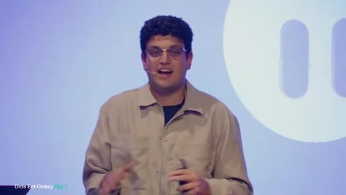
Amrita（ステージ Q&A 続き） は、質問は「このツール認証がうまくいかない／たくさん聞かれる。どう対処するか」。セットアップ次第。Grok Bot に自分で調べさせ、ツールを過度に指定しないのが有効。
自分が最終的に Granola に着地した理由はファンだからではなく、オンデバイスの文字起こしを Grok Bot が取りやすく、必要な洞察が得られたから。他ボットを最適化するボットが、将来「これはファーストパーティ統合になった」と気づいて乗り換えうる、と。
ツール指定を緩めるのは有効だが、自前ボックスで接続が詰まるのは本当にストレス、と共感。初期は創造的に迂回。目標（聞き取り: gap／goal）は Marketplace のプラグイン増で需要をカバーすること。
Q&A② レガシーUI vs API・ヘッドレス・Computer use
会場質問: レガシーは API 無し／API が UI より高い。UI フロー経由で API 並みの速さにできるか。最適化の2点: (1) ヘッドレスブラウザで DOM をクリック指示し、スクショ→判断ループを減らす。(2) computer use 向けにモデルを速く・上手くする作業中。
API より速くなる約束は層が増えるほど難しいが、可能な限り近づけるのが方向性。
Q&A③ 複数ボット最適化・グループチャットの代償・Forget
質問: 複数 Grok Bot の最適化、互いの干渉、モデル変更のたびに直す必要、トークン最適化。グループチャットにボットを入れる機能あり。プロ: 複雑なタスクで協力。コン: みんな喋りたがる／被り／プロアクティブすぎてコストが膨らむ。
今はグループより、ボットが他ボットに一度だけタグして別会話で進める方がよいケースが多い、と注意。モデル選定はブラウザ use／内部ボット含め継続改善。出荷時のモデル制御は Cursor や Grok build の cloud agents で自分で指定・デフォルト指示が可能。
あまり知られていない技: ボットに「forget（忘れる）」と伝えられる。例: プロフィール画像生成の話を二度と思い出さないで → コンテキスト掃除とトークン効率。
Q&A④ Marketplace 評価・ボットがボットをレビュー
質問: Marketplace のボットをどう評価・ランクするか。内部 Marketplace（音声: x.ai slash bot slash marketplace）は現状人手監査。テンプレは多いが、価値あるものを選別し、同意があれば最適化して掲載。
最も簡単な確認は自分で試すこと。初期セットアップで「何をするか／どうやるか」だけ聞き、フル実行前に自己選別。Marketplace 掲載は人間レビューに加え、ボットがボットをレビューする仕組みも（デモで見たもの）、と。
Q&A⑤ アカウント横断・Local execution・共有FS
質問: 人と人・アカウント横断でボット同士が会話できるか。→ 未対応。フォームファクタ検討中で、面白いユースケースとして期待。質問: ローカルとボットのコンピュータを同時に使うには。→ Settings で local execution をオン（デフォルト許可も可）。ブラウザを自分のマシンで駆動なども可能。
それでも多くをボットのコンピュータに寄せる理由: モデルが速くなるほどデバイス外委任が未来。ローカルは便利だが (1) 作業中にウィンドウが前面に出てきて並列しづらい (2) 自分のマシン資源を食う、と「janky」。質問: 全ボットは同じメモリか。→ メモリは共有しない。ただし同じファイルシステムを共有。1 VM 上にボットごとのインスタンス（デスクトップ複数のようなイメージ）。必要なら互いのファイルを読み、タスク用にプロアクティブに使う。コンテキストウィンドウは同一ではない。
Q&A⑥ Cursor cloud agents 連携・Starbase チャレンジ
質問: Cursor cloud agents と Grok Bot の関係。→ ファーストクラス統合（Grok と Cursor が近い利点）。Grok Bot が関連コンテキストだけ渡して cloud agent を起動 → 独立作業 → 結果帰還。環境アクセスがあれば QA／テスト／PR 確認も。使い分け: 複雑タスク・出荷・モデル完全制御・深く触りたいとき → Cursor cloud agent。オーケストレーションは Grok Bot。数回試すと直感がつく、と推奨。
Q&A 終了。追加: Starbase 旅行が当たるチャレンジ — 一生もの級、ぜひ。チャレンジ投稿あり。ぬいぐるみ（plush）も、と。画面は 「Grok Bot Galaxy / Be right back」 に切替（AV／スタジオ接続待ち）。
スタジオ切替・Jenny 導入・Grok baby
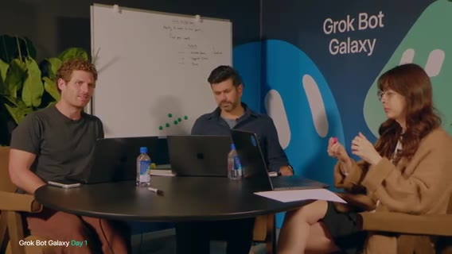
– 音声トラブル。「聞こえない」「音がまだ」など。プロデューサー調整。スタジオ側: 「Jenny、ありがとう」として、女性向け AI コミュニティをリード、VC／テック／コミュニティ、メディア事業を横断で構築、と紹介。
特別ゲスト（赤ちゃん）も登場 — 「first Grok baby」ジョーク。「teach them young」。本日は Grok Bot で事業を立ち上げ中。Jenny はアクティブユーザーなので自己紹介と活用から、と。
22ボット組織・Master Chief・Boxy／Scribe／CFO
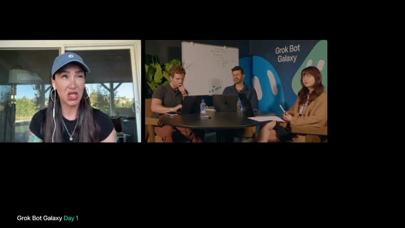
Jenny は、VC フルタイムクリエイター／メディア帝国に加え育児中。Grok Bot のおかげで会社づくりを続けられる。最近ブランディング／メディア代理店を構築。Grok Bot 従業員が22体。普通ならできないが、ボット群のおかげで事業＋育児が両立、と。
不動産〜VC ファンド〜メディア〜代理店など7事業。Chief of Staff モデルは当初嫌いだったが結局採用。夫命名の Master Chief が CoS。Master Chief は、賃貸のテナント／ゲスト管理、代理店、インバウンドブランド提携など横断で統括。
各ボットは個別タスク。例: Boxy＝受信箱監視；Scribe＝Whisper Flow 等の会議ノートを取りサブエージェントへ委任；CFO＝簿記・財務・レシート整理。CoS がグループ会話でプロジェクトを立ち上げる（ステージで話していたグループ活用と同様）。
チームの pop-up 案共有・会場準備の遅れ・基準不足
Matt 側: 終日リッフ／ピボット。残り時間で事業構築。Jenny の構築・助言経験から学びたい。現案: 対面 pop-up＋ローカルビジネス接続、遠隔参加の仮想案も探索。ソフトウェア化する方向。イベント事業の知見・注意点を求む。
Jenny は、直前に乗っていた Eric（音声）と話していたのを見た。最後はグッズ在庫を見ていた、と。今の pop-up／スケジュール実行状況を確認したい。チーム: かなり遅れ。候補リストはあるがアウトリーチ未実施。会場候補はあるがロジ未整理。
Jenny は、スタジオ側マイク音量アップ依頼。Jenny は、VC ファンドに加え世界有数級のピッチ競技を運営 — 会場選定に精通。SF フォーカスでよいか確認 → Yes。
ボットで会場要件をまとめたか？ → 緩く「約100人、倉庫系、ギャラリー的なオープン空間」。もう少し多い可能性。詳細不足、と Jenny。
パーミット・食事・Scout ボット・ケータリング制約
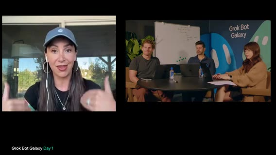
イベント制作の視点: ボット検索の前に詳細を。時期は？ → 来月前後、パーミット次第。カリフォルニア／SF はパーミットが大量（十数種もありうる）。アルコールは？ → 単純化のため無し。
食事は？ → あり。ホットサーブ。→ これらを会場検索ボットの条件に入れる。Jenny の Scout（検索ボット）イメージ は、SF 郡で条件に合う会場を特定。収容人数に加え、夕方開催か（9–5のみの会場もある）、厨房要否など。
オンサイト調理 vs ケータリング持ち込み。ケータリングなら会場の推奨ベンダー制約が多い。チーム: まず空間の楽しさを優先し、制約に合わせる。細部は Grok Bot にリサーチさせてもよい。
Event planner 階層・メール交渉・予算テンプレ
条件を具体化するほど空き状況まで速く到達。SF は会場争奪＋法規制がキツい。会場スカウティング専用ボットが次ステップ。Event planner ボットはまだ？ → ない。pop-up はまず1回から。
CoS モデル同様、イベントプロデューサーを逆算し、planner の下にコーディネータ／スタッフ相当ボット。会場への実接触: 電話かメールか。Jenny: メール統合推奨。例: Poshmark／Depop／Mercari 等で服を転売し入札交渉するボットを運用中 — 交渉フレームワークを設定済み。
会場へ RFP／空き確認だけでなく、予算パラメータで交渉往復も可能。交渉上手の教え方？ → まずイベント予算を立てる必要。ベースライン（会場・食事相場）の市場調査を。
SF は高め。Event planner ボットに初版プロダクション予算を作らせる: F&B、マーケ、スタッフ。ボットで大半はいけるが、受付・セキュリティは人間が必要、と。プロンプト例: 「あなたは SF のシニアイベントプランナー。次の条件のイベント予算を…」→ 条件に合う会場へ RFP。
ライブで予算プロンプト作成・AV・ベンダー集約
Lauren／チームが Grok Bot にライブ口述: シニアイベントプランナー／SF／100〜200人の pop-up イベント予算（後で変更可）。Jenny: 「pop-up」だけでなく event と明示（屋外想定の誤解回避）。項目: venue、F&B。画面共有して見せたい、とホスト。
スタッフ費用（会場付帯の有無で変わる）。マーケ予算はイベント内か会社マーケか — 当面はロジ特化でマーケは別線／後回し。音楽／DJ／AV？ → 会場オプションが多い。マイクで観客に話す必要（ローンチ説明）→ 基本 AV（マイク＋スピーカー）は入れる。フルステージは不要かも。
RFP 交渉の中で AV 有無が見える。目標は1会場にベンダーをできるだけ集約（さもなくばベンダー用スカウトボットが増える）。予算ボットを発火。Jenny にもう2〜3個の必須ボット案を依頼。
Permit／Red tape bot・政策ボット・契約は「2年次ロースクール」レベル
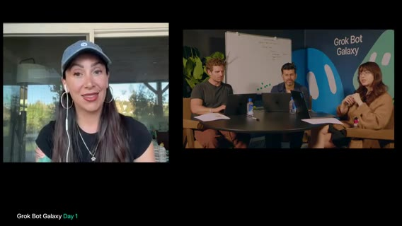
Jenny は、「初めて言うかも」として、permit Grok Bot／red tape Grok Bot。SF でイベント実行に法的に必要なものを調査。線引きを避けたい。一般論: 規制リサーチは苦痛。都市ごとに違うので、実行地のポリシーを見るボットは有用。社内ポリシー／雇用ポリシーの source of truth にも。
Policy bot で契約の一次読みも。Jenny: 弁護士友人の言い方 — AI は2年次ロースクール学生レベル。文言は読めるが業界の「going rate／実務ニュアンス」は弱い → 一次パスに留め、経験者のオーバービューが必要。Jenny の代理店をリーンにできた理由: 人間がやる手順を先に設計し、それを逆算して AI 化。チームの方向は良い、と。
夜通しエージェント・Scout 下書き・Meta招待リスト・Jenny退席
Day1 締めに向け、今夜回す long-running agents を決めたい。予算エージェントはメールやり取りで進捗しうる。他は？Jenny は、(1) Scout — 検索・特定・朝にレビューできるアウトバウンド下書きまで（朝は Send だけ）。(2) 集客 — Meta／Instagram にエージェントをログインさせ、同市のフォロワー上位50等で招待リスト→下書き。配信の大きなオーディエンスもソースになりうる、とホスト。
Jenny に感謝。サイドバーで多数エージェントが走るセットアップのスクショを共有したかったが画面共有が失敗 — どこかで投稿予定、と。Masterpiece、と称賛。Jenny は、この pop-up は「やるしかない／merge しろ」勢い。残り約48時間でロジを、と別れ。
Day1振り返り・フォーカス不足・ラップ・チャレンジ再案内
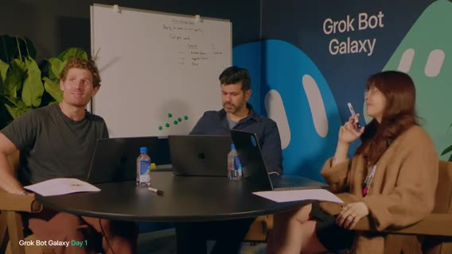
残り約10分（〜5:30 締め予定、と口頭）。アイデア出し・方向転換・ホワイトボードありだが道のりは長い。Jenny からの学びと明日への一言。アイデア生成は難しい。クラウドの知恵（ゲスト視点）は有用。夜通しエージェントを回しつつ、1〜2個にロックインしたい。
セットアップは進んだ: スライド、接続、Notion、lander／ダッシュボード的な開始から反復。ただし ロックインが必要 — 今夜から。Jenny 対話後の実感: SF で実 pop-up はかなり難しい。「正しい課題か」再考の余地。明日リフレッシュしてロックイン／何をビルドするか決める。
忙しい一日。SF で事業構築の Day1。続く2日は Dreamforce 併設の Grok Bot Galaxy。締め前: Galaxy／Grok Bot Galaxy チャレンジ — テンプレ作成・提出（音声: at rock 等）。映像ロストの言及ありつつ提出先案内。Thanks／See you tomorrow／Thank you。
以降ほぼ無音。ストリームはこの付近で終了（4:00:00 までのコンテンツなし）。
復帰・potato factory・AI Maturity
seg04b · ストリーム 3:37–4:00
BRB（無音〜待機画面）
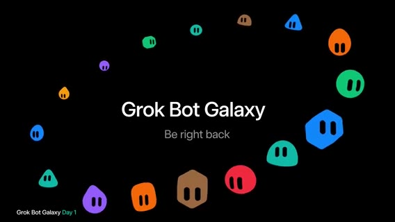
– 画面は 「Grok Bot Galaxy / Be right back」（カラフル bot アイコン環）。Whisper は断続的な "You" のみ。実質 AV／スタジオ復帰待ち。
スタジオ復帰・Day1 速報ラップ・SF pop-up 方針
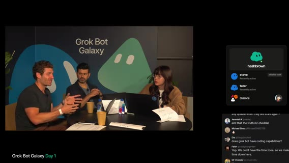
「We're ready to start」→ スタジオ復帰。「I think we are back」「We're back for life」。ホスト: 短い recap。ここまでハッキング中。次セッションまで約5分 — Grok Bot for engineering（音声: rock pot for engineering）。
朝の振り返り: マーケットリサーチ、Twitter（X）上のレストラン案、アイデア整合。ゲスト Peter（音声: peer gang）と Cody から go-to-market の学び。以降のフォーカスはビルド。エンジニアリングセッション後は Lauren が potato 周りで構築する様子を見せる予定。
合意アイデア: SF のレストラン pop-up／体験。レストランと来場者をつなぎ、体験づくりを通じてソフトウェアも生む。3日間の理想アウトプット: (1) 体験創出の operating system／プロダクト (2) 体験そのもの。野心的だが挑戦、と。
予約体験を従来型より楽しく、など — クレイジー案は Day2 に回す、と。
Lauren：potato factory・hashbrown・Tater・PR→Slack 自動化
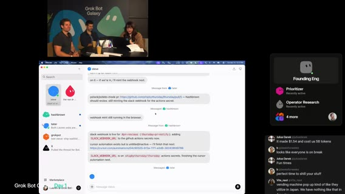
Lauren に進捗確認。まだ構築中だが potato factory セットアップ中。オフストリーム中に新 bot hashbrown（音声: hashground）を作成。役割は Tater（エンジニアリング bot）が開く PR のレビュー。
自分だけでなく Matt ら（音声: Russian and Matt — 名前は聞き取りゆれあり）にも同様のセットアップを検討中。リポジトリに Piece Stack（音声: piece stack）を追加中。Cursor plugins はローカルだけでなく repo plugin としても入れられ、bot／agent が容易に設定可能、と。
並行して bot に Cursor automation を設定中。例: PR を開いたら Slack チャンネルに投稿 → automation が拾ってレビュー、場合によってはマージまで（方針は未確定）。理想フロー: bot が PR を Slack に投下 → reviewer bot がレビュー → 良ければマージ。貢献しやすいコードベースにしたい。スキャフォールディング／agent skills が多い、とホスト。
スタートアップ速度・SpaceX 類似・ビジュアル／lander・ステージへ切替
Lauren は、過調理は避けたい。スタートアップなので「翌日まで生き延びる」程度の基本で拡張可能な仕組み。ホスト: SpaceX で使っていた factory に似ている？ → Lauren: 似ているが今回は一から。元セットアップの再考・改善のチャンス。
休憩中の話: lander のビジュアルデザインも担当検討。普段は Piece Stack、Grok Bot（音声: Grapaut）で IDE／設計 → Cursor cloud agents で実装、というフロー。約1分後に切替 — SF／Dreamforce から Grok Bot for Engineering ライブ。チームメートが同様ワークフローを実演。切って戻ったら構築継続、と。
ステージ開演・発表者自己紹介（Grok Bot for engineers）
ステージ: 「Good afternoon and welcome to Grok Bot Galaxy」。本日のワークショップは Grok Bot for engineers。発表者（音声: Lynxie） は、xAI（音声: SpaceX AI）のソフトウェアエンジニア。Cursor に参画し現在 xAI — 約9ヶ月で2プロダクト出荷、と。
以前 Cursor 3 agent window（音声: cursor three Asian window）を構築、現在 Grok Bot を構築中。直近2ヶ月はエンジニアリング作業をほぼ Grok Bot のみで実施。Grok Bot で Grok Bot mobile 初版を一人で約3週間。学習速度向上・first principles での試行。このスーパーパワーを共有するのが本日の趣旨。
AI Maturity Curve① Autocomplete → Ask & Edit → Agentic Coding
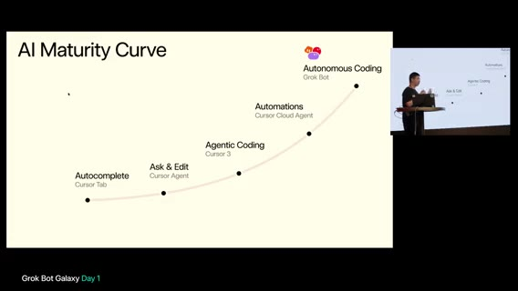
エンジニアリングの旅はおおよそ 2024年初頭から。それ以前はシンタックス系 autocomplete。その後 Tab completion（Cursor Tab）が大きく前進。次に Ask & Edit — コードベース把握が速くなり反復作業も可能に。ただし大規模タスク一括はまだ弱い時代。
Agentic coding（Cursor 2／Cursor 3） は、コンピュータ操作（マウス／キーボード）で E2E テスト、より長い horizon で計画。slash goal／slash loop 等で最後まで走らせやすく、nudging が減った、と。それでもプロンプト作成・起動は人間側が必要だった、と次段への橋渡し。
AI Maturity Curve② Automations（Cursor Cloud Agents）
Automations＝Cursor cloud agents の時代。Slack 受信などのトリガーでエージェント起動。人手起動に依存しない。24/7（睡眠中も）稼働。ローカル資源の限界を超え、クラウドで多数マシン並列（ポート争奪も解消）。
Cursor チーム内でもほぼ 10x 以上になった、と。それでも「次」を考えていた。
AI Maturity Curve③ Autonomous Coding＝Grok Bot・オーケストレーション需要
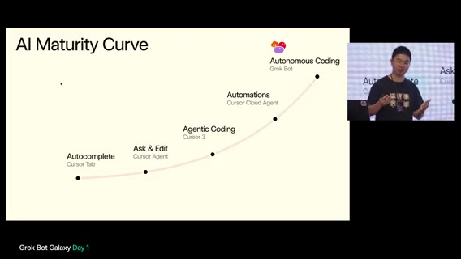
Agent decoding は既に強力で少人数が大きなプロダクトを出せる兆し。さらに楽にするには？アイデア: Grok Bot（音声: rock bot）— プロンプト作成・オーケストレーションを助ける AI。自身はかつて 15 Cursor cloud agents を管理し、コンテキストスイッチが大変。フォローアップ起動・キュー・割り込み／方向転換を代行する別エージェントが欲しかった。
モデルは既に必要なシグナルを取れる、と考え部品を組み合わせ → 自律エージェントのチーム＝同僚級。タグして直接協働でき、共に成長する。
Grok Bot 紹介スライド開始（クリップ末尾）
「So let me introduce you to the Grok Bot」（音声: grandpa）。フル自律 AI エージェントのチーム。エンジニアリング含め全種の仕事向け。(1) 24/7・完全自律。PC スリープや手元ノート PC 不要でも動く。
(2) エンジニア最大のアンロック は、コーディングエージェントを管理できる。Cursor に限らずほぼ任意の coding agents を管理できる、と（クリップは「And the best thing is it has.」で 4:00:00 付近に到達し分断）。
Engineering デモ・スタジオ構築
seg05 · ストリーム 4:00–5:00
Introducing Grok Bot① Cursor Cloud Agents 一次統合・ツール／MCP
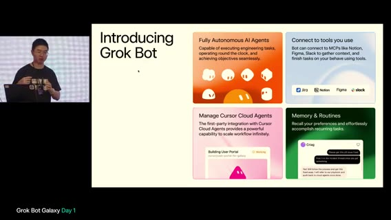
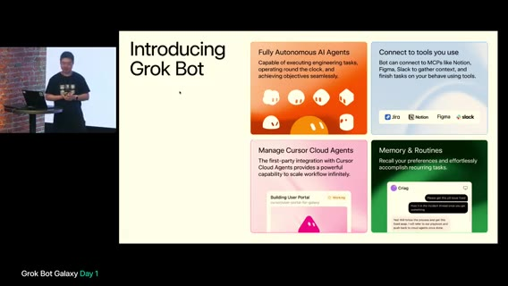
前時間からの続き: 最大の強みは Cursor cloud agents とのファーストパーティ統合。トランスクリプト読取・cloud agent 起動・プライベートワーカー（自分の Mac など）起動までツール経由。Cursor ウィンドウでできることは Grok Bot がツールで代行。UI を手動でデバッグ操作して agent を起こす必要が減る。
進行中／完了の cloud agent 作業を検査可能。例: 完了後に「証明」（スクショ、前後パフォーマンス比較など）が足りなければ フォローアップ返信を自動作成し、自分がPC前にいなくても継続。第二柱: 日常ツール接続。例: エンジニアが Vercel（音声: Versel）へデプロイするなら Vercel MCP。ローカル agent に繋ぐだけでなく、24/7 でビルド失敗シグナルを見て修復開始、指定時刻（例: 翌朝6時）デプロイも可能。
② Memories & Routines・③ なぜ Grok Bot か（他製品比較）
Memories & Routines が大きなアンロック（継続学習より前進、と）。長期に選好を保持。名前付き Grok Botごと別メモリ → 無関係メモリで溢れない。一度伝えた改善方針を次回の cloud agent／レビューに自動適用。繰り返し説明が不要。
なぜ必要か: OpenClaw／Hermes 等（音声）はエンジニアリングまで弱い — Grok Bot／Cursor 一次統合が無いため、と。
画面では、「Introducing Grok Bot」4ボックス — Fully Autonomous／Connect to tools (MCP: Jira Notion Figma Slack)／Manage Cursor Cloud Agents／Memory & Routines。
差別化: 常時稼働PC不要・全プラットフォーム・Computer use・一次統合再強調
(1) カフェインでノートPCを起こし続けなくてよい。Grok Bot は自前コンピュータ。送信後はノートを閉じてよい。(2) 全プラットフォーム は、最近 iPad／Android 出荷、既存 iOS／Windows／Linux／macOS。例: Golden Gate Park の芝生で横になりつつ bot が作業（音声: golden gay park）。
(3) 必要時にコンピュータを操作できる。他製品はログイン／クリックが要る局面で人間依存・トランスクリプト観察のみ。Grok Bot はモバイル／デスクトップからリモートPCを直接クリック（パスワードを渡したくないログイン等）。(4) Cursor cloud agent 一次統合の再確認 — Cursor UI でできることのほぼ全てが Grok Bot 経由でも可能、と。
ユースケースA: 不在時に完了・Slack監視・境界設定
「Away でも進める」: 睡眠中／フライト中に唯一のコードオーナーが必要なとき、bot が Slack を監視し基準に沿ってアンブロック／レビュー／ACK。監督が要る件はスマホで確認 → Grok Bot に approve → 相手へ通知。
メンション以外の一般 Slack も監視し、レビュー基準（スクショ必須、本物のテスト等）を適用する方向。リポジトリ内 skill 実行にも言及（音声ゆれあり）。
プロダクト境界: bot は親切で何でも受け入れがち → 何をすべき／すべきでない＋理由を明示。メモリが将来判断に適用され、毎回「シンプルに」等を繰り返さなくてよい。認証で詰まったとき、人間が短時間でアンブロックできる体験が重要、と。
ユースケースB: Nightly code cleanup／TestFlight／CI赤の自動修復
Marketplace にもあるお気に入り: nightly code cleanup。エージェント出荷の「slop」掃除を夜間（コンフリクト少・低リスク）に。冗長コメント圧縮・モジュール化など。証明付きなら cloud agent にマージ条件を委ねうる。実セットアップ例: 毎朝3時にリサーチ cloud agent が monorepo 横断で品質・モジュール化・コメント・セキュリティ監査。起床時に PR セットが揃う。
内部ツール: TestFlight 招待 — Slack で bot をメンション＋メール → webhook／routine で追加。安全な TestFlight アクセス＋ワンプロンプト。Auto-fix everything は、CI 赤で毎回 on-call を叩かず、bot が調査→cloud agent 修復→マージ判断指示。デプロイ失敗・フレーキー・アラートもフック。約10分未解決なら on-call。多くの場合 Grok Bot が10分以内、と。
ボット編成: 複数 Engineer Bot・Chief of Staff・メモリ分離
ボット編成紹介。1体 vs 複数の議論。Engineer bot を3体にする理由: 同じモデルでもタスクはできるが、コンテキストと艦隊管理が違う。パイプライン／コンテキスト上限が別 → 分離してメモリを専門化（例: Hogan への指示は Hogan メモリに残る）。
個人 bot に全部話しかけなくてよい。Chief of Staff が誰が何をしているか把握してルーティング。CoS は詳細エンジニアリング手順を全部覚えなくてよい。
ライブデモ① Marketplace から Engineer／Nightly Audit・ボット同士オンボード
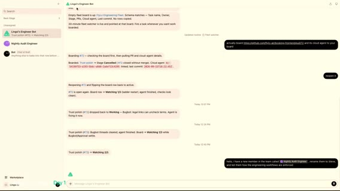
ライブデモ開始（本人も初回セットアップ気味）。Marketplace から Linga's Engineer Bot（音声: link she's engineered）を取得、リポ／Notion 接続済み。Nightly Audit Engineer も Marketplace（Grok Bot チーム）から。オンボード自動開始だが、既存ワークフロー文脈は無い。
人間が手順を再説明せず、既存 Engineer bot に新メンバー（Nightly）をオンボードさせる。Craig（音声ゆれ: correct）が Steve にクリーン定義・ステージ梯子・パイプライン要件をメッセージ。Steve がメモリに吸収。ボット間確認のみで人間は「confirmed」報告を受ける。
通常は午前4時の nightly を、デモのため今すぐ Steve に開始指示。
画面では、Linga's Engineer Bot チャット、FlyLo Engineering Fleet、PR #72 Trust polish、Nightly Audit→Steve リネーム指示など。
ライブデモ② P0（flyair）・Jenny＝Ops／Playbook・P0定義と Routines
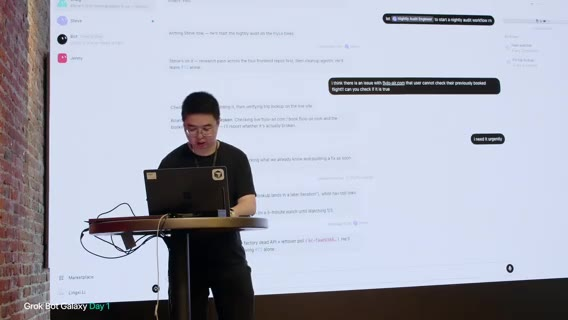
緊急: FlyLo／flyair 系で過去予約確認できない問題報告 → bot に急ぎ対応させるデモ。「urgently」を毎回言いたくない → 自律の要点は繰り返し禁止。CoS に Jenny（Head of Operations）をオンボードし、engineering playbook を Notion 等で管理・更新させる。
「urgently」の意味を定義し直す必要 — 長時間 horizon で迷走する coding agent 対策。P0 定義 は、Grok Bot が cloud agent を5分ごと監視し、長スリープやゴール逸脱なら割り込み・新プロンプト。人間はプロンプトを書かず P0 の定義だけ書く。
画面では、Routines（Fleet watcher 30秒、Trip lookup 5分）、P0-101、Craig／Steve／Jenny サイドバー。
ライブデモ③ Playbook 共有・証明付きPR・Fleet DB
Jenny が全 engineer bot にアナウンス。ボット同士の会話が主で、人間は EM／メンター視点。Jenny→他ボット＋Craig へ playbook 更新（P0 urgent が standing ops）。
PR に proof（UI ならスクショ、perf ならメトリクス）必須を playbook へ。Craig＝事実上の head of eng。クラウド agent 本体より結果と証明を見る運用。Steve が cleanup PR を用意 — チャット中も既存タスク継続（人間のマルチタスクに近い）。
例は、約20 cloud agent 管理時、全状態をコンテキストに載せず DB／ボードを都度参照して次タスクを取る。
デモ締め〜スタジオ切替（AV）
デモ続き／まとめ（一部 Whisper ゆれ大）。ステージ側のエンジニアリング・ワークショップパートが終わり、AV 切替でスタジオへ戻る流れ。
画面では、ステージ単写や切替フレーム（t043600_stage_talk.jpg 等）。
スタジオ復帰・Thursday／shipbythursday・Dr. Eggbot・PR→Slack automation
ホスト: レストラン事業構築中、自分は CEO 役。リポは主に ship by Thursday／Thursday（会社用）など。ドメインあり、Grok Bot からアクセス可。作成中 bot: Prioritizer、Operator Research（Cody 対話を受け、類似 pop-up 事業者リサーチ — Flower and Water 等の良い店も）。
bot 作成は Marketplace の Dr. Eggbot（Lauren 作・bot factory）。AV を Lauren 画面へ。Lauren は、Slack に #pr-reviews。自分／bot が PR リンク投稿 → 剛セットの Cursor automation（現状は簡易プロンプト）がレビュー。Piece Stack（音声: pieceknack）で correctness／risk／missing tests 等を見る想定、これから反復。
Verification skill・Tater／Steve・lander 並行
Lauren は、検証（verification）が bot 活用の鍵。アプリ実行・トレース・ヒープ等を bot 自身が回せるようにしないと「あなたがクリックして結果教えて」往復で遅い。Steve に Piece Stack の create verification skill を依頼 → Tater に委任。status 確認しつつ待つ。
並行でホスト側: lander デザイン磨き（make design／interfaces feel better 系 skill、ミニマル優先）。Lauren のプロトタイプをプロ寄せし、ウェイトリスト系と接続予定。画面共有の AV トラブルありつつ再開。
Verification の中身・ウェイトリスト／Resend・PlanetScale・UI方針
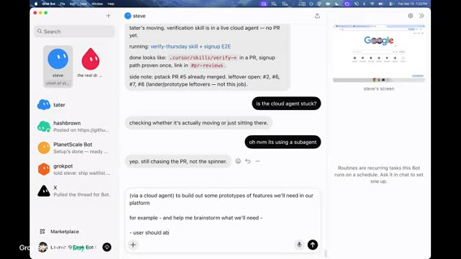
Verification skill の二要素（経験則） は、(1) 再現可能な CLI／標準ツール（毎回その場スクリプトはトークン浪費・ボットごとバラバラ）(2) feature map（機能名・到達方法・ショートカット等 — 今は機能が少ないが将来用）。ホスト: ウェイトリストはメール収集が当面必要。Loops も好きだがまず Resend が簡単、Thursday リポに Resend プラグインあり、とエージェント指示。
ドメイン接続済み。提出フォームは試作で throwaway — 視聴者に「まだ本提出しないで」と。PlanetScale で裏を見る話。DB／収集項目は未整理と自己ツッコミ。UI を大幅にミニマル化。主目的: pop-up 参加希望のゲスト email、右上にレストラン／提供者向け導線。予約・ゲスト情報を主に収集。
イベント／体験の他フィールドや次タスクの雑談・実装指示が続く（Whisper 末尾は断片多め）。クリップは約 4:59:45 でほぼ時間切れ。
会場探し・アート展ピボット・PM トーク開始
seg06 · ストリーム 5:00–6:00
スコープ過多・コアフロー・ドッグフード優先
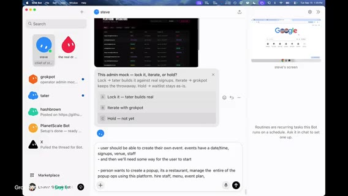
画面では、Grok Bot チャット（steve）に admin mock ポーリング「lock it / iterate / hold」と popup ops 要件メモ（イベント作成・会場・スタッフ・メニュー等）。音声は続き: 招待・参加者管理・チケット有無まで含むとスコープが大きい、と懸念。
各項目が単独プロダクト級。コアフローの最小に絞りたい — イベント名／日時（開始・終了）程度でよいのでは、と。ポップアップ種別・タイムスロット（30分／1時間／自由入場）も論点だが、まずは単純化。
自分たちもポップアップを運営する予定なので、先に運営し、必要になったツールを後から組む方がよいのでは、と合意方向。会場探し／メニュー／レストラン探し／集客 — 何から？ 現状はサイトのメール収集がブロッカー気味。ランディングはメール収集済みだが、開催日時の宣伝がない。
リーチ・アウトリーチ bot・手動→自動化の原則
次: SF で予約／ホスト可能なレストラン調査。X（Twitter）アカウントで「SF／Bay Area のレストラン／シェフ向け」募集ツイートも案。market research というより outreach bot。Dr. Eggbot にいくつか立ち上げさせる、と。
エンジニア（Lauren）が全部ビルドしなくてよい。重要なのは「何を最初に作るか」。自前の会場／運営探索に接地させる。エージェント skill も手動を先にやってから自動化する、と同型。Cody の指摘どおりドメイン専門家ではないので、運営の手触りを先に。
コールドコール・メール DNS・4要素・日付ロック
いきなり大量ビルドは効果が不明。コールドコール案。Matt の「Grok を音声エージェントに繋いで電話」デモを想起 — 番号リストを用意し、人間が引き継ぐ形でもよい。レストラン／ホスト候補の電話・メール調査。メール配線（DNS／ドメイン shipbythursday）を今すぐ。Google Workspace か転送か — 当面は個人メールでも可、ただし差出人はマトモに。
Dr. Eggbot に「レストラン／ホスト候補リサーチ用の新 bot」を依頼する流れ。物流の端到端: (1) 食事を作れる主体 (2) 場所 — この2つと日付と人。まず日付があると電話で「この日にやる」と言える。
保守的に 10月15日 を仮置き。Notion に事業メモとして記録。Bay Area のレストラン／ケータリング候補リストを Notion／Drive に。場所リサーチは並列で bot に。
GitHub フレーク・venue-finder プロンプト・Bland MCP
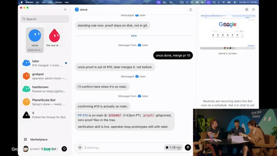
Lauren は、Dr. Eggbot まわりでリポジトリアクセスのフレーク。再認証／GitHub CLI のスペル確認など。Steve 向け文脈: スタートアップ案は ドッグフード — 実際にポップアップを立ち上げ、楽になったところだけツール化。
第一歩は場所。Tater に cloud agent を spawn させ、レストラン／会場探しプロトタイプ群を作るよう指示。地図＋検索＋すぐ電話、LinkedIn 等で責任者特定、見た目は後回し。プロンプトが非常に長い。いつものように「実行前に言い直し」を要求。
電話プロト: Bland MCP をビジネス電話で使った経験あり（Whisper: potatoes＝Tater 関連のゆれ）。並行で Dropbox からキッチン／ケータリング候補約15件のショートリスト。場所 bot とメール配線も同時。
地図キー・OSM・手動アウトリーチ並列
Google Maps API キー要否。UI に場所情報を出す用途。OpenStreetMap は無料代替として有望、キー取得も楽、と。places directory／評価レイヤは後で。
Lauren は速攻ハッカ。Matt／Motion 側は手動で候補電話。admin dashboard のロック（認証）は必要、と。Motion は、ソフト先行ではなくプロダクト側 — bot に20社のメール／電話を集めさせ手動リーチ。ケータリングは1ヶ月先なら現実的、会場は難しめ。
メール設定でサイト signup 連携。WorkOS／Google サインイン／自前 OAuth は過剰では、と議論。
Clerk vs Vercel 保護・ゲリラマーケ
Clerk（または WorkOS）。Hobby 枠で十分なら Clerk で開始。結局プロト段階では Vercel deployment protection で十分、と収束（dogfood 地図ツール向け）。
Motion は、SF でチラシを貼れそうな通り角トップ50を調べる bot＋デザイン bot でフライヤー。ゲリラマーケ。Lauren は、ランディング磨き・API キー作成など環境セットアップ中。
API キー手動作成はまだ残る作業。verification PR も並列でレビュー開始。次セッション接近で会場の人が増え始める、と。
Knowledge Base Manager・中継ラップ
Notion 投稿でボットに事業コンテキストを渡している話。Knowledge Base Manager bot を作成 — 他会話を監視するが、呼ばれない限り動かない／まず確認してから Notion を選択更新（スパム防止）。
デザインシステムは未確立。超ミニマル。フライヤー用に共有したいが、まだ早い段階。途中参加者向けラップ: SF フード pop-up 案、朝からアイデア出し、bot 群がデザイン／LP／アーキで稼働。早く検証したい。ゲリラマーケ＋ビジネス候補リスト＋lander 公開が当面目標。Lauren＝主にエンジニアリング、他はアドホック立ち上げ。
コード品質・TS 維持・Rust／Go 冗談
デザインの SoT はリポ寄り。lint ルールは早すぎるかも、と。スタートアップでは予測オーバーエンジニアが無駄になりやすい。ピボットもありうる。
明日以降 PR レビューでエージェントのミスを見る。コードベースはメモリの一種 — アーキ／制約でエージェントがデフォルトで賢くなる、と（X 上でもよく話すテーマ、と口頭）。「全部 Rust？」冗談 → コンパイルが遅くスピード阻害。TS はエージェント向き。Go も候補だが当面 TS。
フライヤー見出し・限定性・Merch
フライヤー見出しポーリング案: One night Oct 15 / SF Pop-Up Oct 15 / Dinner finds you / 自分で書く。機能より「何を売るか」。ライブで AI と作っている体験は売りだが、顧客はそれを聞きたくないかも。「最近いつ初めてのことをした？」 系の感情フック案。
Slack に通り角マップ初版。限定 merch ドロップ案 — プラットフォームに組み込みうる。pop-up の魅力は時間制約と希少性。Grok Bot／Grokpot merch、ソーシャルゲーム、現地体験を事前に匂わせる案。
Slack に marketing チャンネル作成。TypeScript で進めると再確認。
検証メディア・DNS・手動電話
フライヤー動画: Cloud agents が動画を作れ、PR description に載せられるのが強い。verification skill が動画必須をまだ強制していない → 常にビジュアル／動画を含めるよう skill 更新。ドメイン検証／Resend 等でメール送信準備。ミニマル LP がまもなく live。GitHub CLI device code 周りでつまずきつつも vanilla HTML/JS プロトで前進。
次トーク〜2:30。接続作業のあと、カメラ外で手動電話して予約の難易度を体感 → 自動化要件の材料に。venue-finder プロトは後で試せる。ゲリラマーケ計画・フライヤー。チラシ貼り要員を雇う／知り合いに頼む案。体験・限定アイテムの企画も Notion マーケ節に蓄積。
会場基準・パーミット・Notion 同期ジョブ
会場選びの観点: ゲストにどう感じてもらうか。まず 約100人。収容＋環境をコントロールできる空間。人間知識から: The Pearl、Dogpatch 近辺の Dogpatch Studios 等。類似会場をパターンマッチ。bot 推薦も参照して skill／コンテキスト化。
予算は未確定（電話するまで）。Host Finder が Notion にリサーチ投入。パーミット: 道路閉鎖・酒類が重い。数週間〜1ヶ月。10/15 はタイト → 6週間後ろ倒しも検討。Four Mason 例: 初回レビュー数営業日＋工事、公園サービス管轄の可能性。口頭ブレインストームが消える問題 → Notion 会社ナレッジへ。Knowledge Base Manager に 5分ごとアクティブ bot から要点抽出→Notion（スパム注意）。
Host Finder へ: Pearl／Dogpatch Studios 類似を優先。政府／NPS 施設は許可が重いので回避。酒類ライセンスは会場／ケータ側に寄せる。
三要素（体験・Merch・食）・art exhibition ピボット・Matt退席
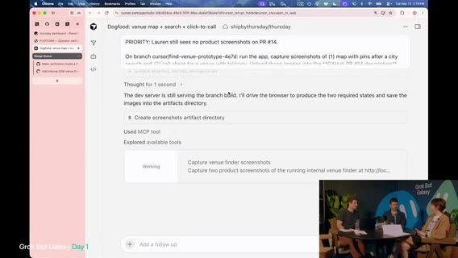
体験ゲーム／merch に続く第三の柱 — Matt: 良い食事。限定メニュー／カクテルをレストランと共同で。menu bot を spin up。
レストラン前提を再考。ケータは複雑。アート展ならクラウドソース／チケット増／bot が作品レビューも、と浮上。ピボット合意寄り: art exhibition。地元アーティスト展示＋コミュニティ投稿。レストラン支払いモデルとの違い（ギャラ支払い vs スペース提供）。
Grok Bot アバター／シェイプを題材にした作品。Web でデジタルギャラリー→現地で実物、の導線。食・酒ライセンスのハードルを下げられる、と。Matt は、次が自分が登壇する Grok Bot for PMs のため退席準備。スタジオ上下で同時進行の盛り上がりを雑談。
倉庫スペース・PR山積・メール待ちリスト
アート展なら倉庫／ミックスユースの大空間が向く。Steve に方針変更を伝達。venue-finder は継続しフィードバックへ。PR が積み上がる。PR #16 verification skill。PR #14 は動画待ち。PR #13 等、プロト依頼で PR が大量オープン。
Knowledge Base／Slack マーケ: SF Top 50 Flyer Corner 等。方針は art pop-up、会場は大型倉庫最適化。ツールが人間リサーチと同じ候補を出すかが検証。検索は Maps API 再利用＋サイズ等フィルタは独自データが必要 → 電話後のデータ入力で venue-finder が学習。
docs 更新が本業化。エンジニア／verifier bot が PR レビュー中だが 動画・スクショ不足 → Steve に完成を促す。メール: waitlist サインアップから hello@shipbythursday… 系の確認メール送信が技術的に可能に。コピー更新後マージ予定。
チャレンジ再案内・セッション切替
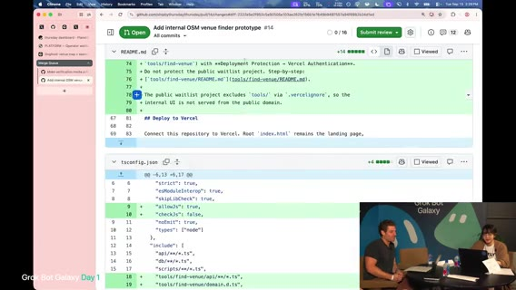
残り数分。Grok Bot Galaxy チャレンジの shout-out。テンプレ提出、勝者＋パートナーを Starbase Texas の Starship 打ち上げ見学へ、と案内（画面で投稿／チャレンジページを開く）。次は隣にいた登壇者がそのまま Grok Bot for product managers。Lauren と残りはビルド継続。PR エージェントのステータス確認。
ステージ挨拶開始へ遷移。
Grok Bot for PMs 開始 — Agents as colleagues
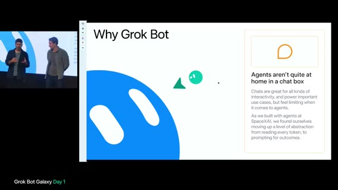
Kevin（Whisper: Kevin DeParko）xAI product は、「Grok Bot for product managers」歓迎。Ruth（Whisper: Root Shin Zazani）も同チーム。自組織で Grok Bot を使いながらビルドした tips／bots を共有する回。PM／ソフトの作り方が急速に変化。
DHH（Ruby on Rails）引用の趣旨 は、ソフトウェア＝プロダクトマネジメントの問い（誰に何をどう優先か）。エンジニア／デザイナ／創業者／PM すべてが向き合う。Grok Bot 自体の動機: 社内でチャットボックスを超えてエージェントに成果を出させたい流れ（コーディング以外も含む）。
スライド 「Agents as colleagues」: 同僚のように扱う — Linear／Jira、Notion、Figma、Slack 等。同僚定義から4点: (1) 複数ツールをまたいで成果 (2) 長期コンテキスト／仕事で学ぶ (3) 独立性（自分のコンピュータ／サービスアクセス） — これが Grok Bot にコンピュータを持たせる動機 (4) メッセージング（ターン待ちなし、と次時間へ続く）。
セグメント境界。スライド継続は seg07。
PM デモ・BRB・merch／IRL 議論
seg07 · ストリーム 6:00–7:00
Messaging 補足・「結果を返す同僚」
スライド Agents as colleagues の続き。チャットボックス制約を舌足らずに言った、と補足 — 同僚との Slack のように割り込み・並列・高速メッセージが欲しい。4原則は「優秀な同僚」をエンコード: 組織コンテキスト、仕事で学ぶ、独立判断、待ち続けない。
Grok Bot＝コンピュータを持つエージェントで、同僚にテキストしている感覚。テイクアウェイ: (A) 本物の仕事を任せ テキストや質問ではなく成果物を返す (B) ジョブを完了する（承認待ちで止まらない方向）。
PM の3ユースケース・社内 PR 統計
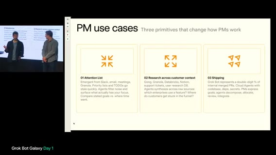
デモ導入。PM向け3用途: (1) attention list — 今週／今月の注意と優先のギャップ (2) リサーチ／顧客コンテキスト — ボトルネック合成 (3) shipping — 2026 の PM はデリバリー必須。社内で Grok Bot 経由の マージ PR が二桁％。プロダクト組織の人間も本番 PR を出せる、と。
Meet the team（Cora／Emily／Ashley／PMP／Pixel／Rae）
Cora＝Chief of Staff（メール／カレンダー／Slack から PM の働き方モデル）。Emily＝EM。自分はコードせず、配下のエンジニア同僚（複数）に委任・検証ループ。
Ashley＝データサイエンス／分析。SQL や信頼ソース探しの代わりに即答・チャート。PMP（Pete）＝プロダクト側キック。PRD 下書き、顧客インサイト、日常プロダクト作業。
Pixel＝デザイナー。S 級 AI デザインの助言で訓練、最新コンテキスト大量投入。Rae＝リクルーター。ソーシング／採用パイプライン。
チーム構成は自由。デモはインスピレーション。
Why many agents
多エージェントの理由: (1) 参照しやすさ — 役割＝誰に聞くか (2) ボット同士が会話・チャンネル協調可 (3) スコープしたメモリで学習ループが効く (4) 並列 — 6体に一斉投げて戻って合成、会議の action items と同型。ライブデモへ。
UI ツアー・Marketplace・Flylo Airlines
会場の約80%が既に Grok Bot 利用経験（挙手）。未経験者向け超短縮ツアー は、左にボット一覧、ピン／セクション（leadership／engineering: Einstein, Igor, Nova, Larry, Ilene 等）、非表示可。Marketplace で Notion／Slack／Figma MCP／Gmail 等を接続。デザイン skill もセットアップに含む。
グループ例: eng ポッドのスタンドアップ、EPD（Eng/Product/Design）、war room（インシデント）。デモ環境ビジネス: Flylo Airlines（音声: Flylow）。以降全員が同社の PM 設定。
Ashley デモ — チケット購買・チャート・6am ルーチン
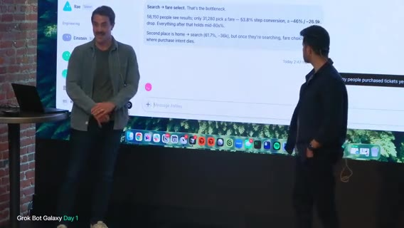
Ashley に「昨日のチケット購買数、モバイル vs Web」を依頼。裏で Databricks／Snowflake 等のウェアハウスにクエリ。結果例: 約 1,400 件、Web ~58%／Mobile ~42%、家族搭乗など。タイポ許容でチャート可視化依頼。
Routines は、毎朝ダッシュボード巡回の代わりにプッシュ。大型ローンチでは 時間次レポートも。チャート: ソロ／カップル／家族／グループ分布、家族シェア約25%。毎朝6am の購買パルスをルーチン化可能、と。
ファネル洞察・誤読訂正・PRD・Pixel／Emily へ
モバイル購買ファネル。座席選択で落ちているように見える → 改善機会、と一旦解釈。スレッド返信で PMP をタグ: 座席選択の落ち込み向けモバイル最適化スペックを、と依頼（ボット間連携）。
Ashley が訂正 は、大きなリークは座席ではなく search → fare selection。誤読をキャッチし PMP に洞察転送。Pete が Notion PRD（P0／P1）を生成。PRD skill は、長い文書より コード／プロトに効く crisp 要件。
人間レビュー層の重要性。デモでは one-shot だが実運用は反復。Notion コメントをボットが読むワークフロー。Pete→Emily にプロト依頼、Pixel もデザイン投入。
Computer／Teach・デザイン投票・Cloud agents
Grok Bot の 自前 VM／コンピュータ。Web ナビ、資格情報利用。右上 Teach a task で操作録画→再現（Salesforce 等の複雑フロー向け）。実行のたび skill 洗練。Pixel は、デザインシステム（Figma）＋航空ブランド参照。フォント／色／アンチパターン（例: 左上に X ボタン禁止）を埋め込み。
Option A／B モックを会場クラップで選択 → Emily にプロト更新。非同期・アウトオブバンド操作がチャット単体より楽しい、と。Emily が優先度を分解し各 IC に直接指示＋文脈付与。エージェント同士のプロンプト組み立てが人間より上手いケースあり。
IC が cloud agents を起動（リポのローカルコピーで変更／テスト）。Nova が PR 作成確認 → 監視 → EM／QA の追加検証ループ。人間介入量は選択可。低リスクは自律、デザイン実装はデモ要求。自己検証環境＋人間検証ツールの両方が効く。
一連の流れを要約: 事業質問→Ashley→PMP PRD→Pixel→Emily／cloud agents。要件深い組織や多リポ同期など、別ワークフローにも柔軟対応。
Lessons・ラップ・Starbase チャレンジ
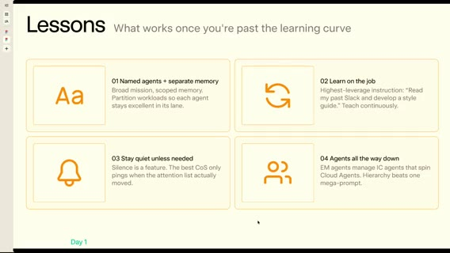
Lessons は、(1) 名前付きエージェント＋分離メモリ — Day0 は弱い、オンボーディングで skill／コンテキスト (2) 静かに — ルーチンで noop なら通知しない（inbox ノイズ削減） (3) Agents all the way down — EM が IC を、IC が cloud agents を。バーチャル視聴者へ: Matt／Lauren／Roshan（Whisper: Roche）が3日間スタートアップを Grok Bot で構築中、と紹介。
Starbase Texas／Starship チャレンジ再プラグ。QR／@ アカウントの投稿で応募。Hawthorne ツアーの runner-up 賞も言及。
Q&A（メモリ）→ BRB
質問: ボット間のコンテキスト重複／チーム横断。回答: 各ボットに 個別メモリ＋必要時に書き込む 共有メモリプール。ロール分離が強い記憶を作りやすい。グループチャットで統合も可。単一ビルダー vs 役割分離は用途次第。初期エージェント時代の「コンテキスト汚染不安」を減らすのが目標 — メタ作業なしで使えるように。
– 画面は Grok Bot Galaxy / Be right back。Whisper は断続 "You" のみ。実質休憩／切替。
スタジオ復帰・IRL／誰向けか
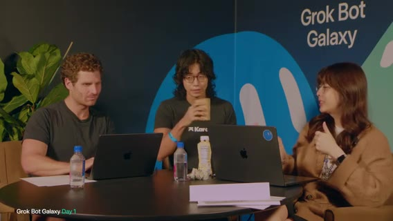
スタジオ復帰。限定体験／merch が pop-up 経由でのみ、という希少性。自分たちで Grok／Grokpot pop-up を作り、ツール→プラットフォーム一般化、と。ゲスト押し: AI が食う世界では IRL がより重要。Uber Eats／DoorDash でコモディティ化しないブランド体験としての pop-up。ステッカー量産時代に「何を代表するか」を示す場。
プッシュ: 誰のためかを明確に。自分たち向け（未経験）と、既に店を持つ層の attention 用ではデモが違う。最初は前者に狭めよ、と。テックブランドの IRL merch／ぬいぐるみはメタだが候補。
分岐・定数・3ページに単純化
分岐: テックブランド向けメタ merch vs レストラン等ブリック＆モルタル。チャット遅延・AV 音量ネタあり。汎用すぎると誰にも刺さらない恐れ。定数: 日付・時刻・会場・人を集める。Lauren がプロト。特化は merch 寄り。
「小さく始めて全員向け」皮肉 → まず テック企業向け merch／IRL、プリミティブが固まってから拡張。チャットは約3分遅延でブラインド進行。PM フレーム: (1) 何を売るか (2) どこで (3) 日時調整 (4) チケット／ソーシャル（友人が来る感覚）。
合意寄り: merch pop-up＋登録／チケット＋venue finder。タイムスロットは当面不要。UI 想像: P1 何を作るか（merch pop-up）、P2 日付／予約、P3 場所。ボット分割は機能別（merch／ticket／venue）か eng／design か — Lauren／Matt に聞く。
ロール分割・tldraw・コミュニティ as a service・Tungsten
Matt は、ボット＝別従業員（Founding Eng／Growth Eng／画像生成／Creative Director／CoS）。タスク単位でドキュメント更新 bot 等も。Lauren は、視覚派なので prototype bot に tldraw で低フィデリティを描かせている（ブラウザ操作）。批判・発散用。
チャット「merch just merch」へ: 風刺帽子をかぶるなら community as a service — AI 時代にブランドの対面バイブを取り戻す。merch はトロイの木馬。ユニーク merch: tater／potato、炎放射器ジョーク（48時間では無理）。自分用に作る良い帽子の話。ぬいぐるみ／感情接続。
効用（良い帽子）vs ノベルティ。TikTok の tungsten cubes 逸話。Grok Bot ロゴ付き／球体は高い（~$500）→ 抽選1個など。まず基本から、cloud agents は裏で稼働。
メール配線・テンプレ共有・スコープ過多の観察
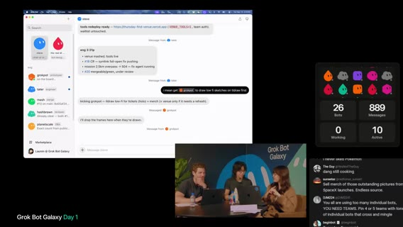
サイト／メール基盤も継続。チャット質問: 友人がボットを使うと訓練を継承？ → テンプレ共有はメモリ／指示／プラグイン等をコピーし、チャットやパスワードは含めない。secure entry。受け取側は自分の版として洗練。スコープ過多のサイン: 人間同様に混乱・的外れ出力。品質が落ちたらコンテキスト範囲を狭めよ。
Lauren（Whisper: Warren）のボット挙動に気づきつつセグメント終了。
Eric／Karat・Founders（Close／Prod／Stalk）
seg08 · ストリーム 7:00–8:00
tldraw チケット／コレクタブル化・merch アイデア
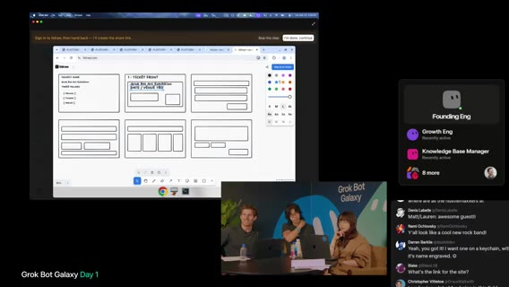
Lauren のボットが tldraw 上で Grok Bot Art Exhibition チケット案をスケッチ中（DATE／VENUE TBD、pillars: Words／Tickets／World）。チケット自体を コレクタブルに（ポケモンカード的な艶）。会場で追加 merch を見る導線。pop-up は「特別」であることが理由なのでチケット品質が体験の一部。
ゲストは、チケット設計ボットに加え、merch 側を任せるボットは？ ぬいぐるみ／高品質フーディ以外の新奇案を。既出: tungsten cube → Grok Bot 形だと約 $3,000 で非現実。ボットに同系統の新規アイデアを依頼。
チャット案: potato plushies、SpaceX 打ち上げ写真、ストレスボール（Grok Bot 形状）、球体ハットに目、等。
3要素（merch／venue／ticketing）・Build-a-Grok-Bot
経緯再掲: 他社向けツール→自分たちの pop-up→将来プラットフォーム。今やるなら merch／venue／ticketing の3点。merch の二軸（Matt） は、utility／craft（良いフーディ・ハット）と novelty。ぬいぐるみ→プログラム可能 plushie（例: Slack 更新読み上げ）への発散。
Lauren は、録画をボットに渡し merch bot を起動。画像生成連携。アイデア過多 → 2〜3点に厳選（意図的・よく作り込む）。PM ハットをゲストに は、登録時に merch ギャラリー選択、将来は 3D プレビューも。
合意寄りフレーミング: 登録体験で 自分の IRL Grok Bot をカスタム／可視化／機能割り当て（天気など）＝ Build-a-Grok-Bot。チャットも同調。ワークショップ全体がメタ（ボットで会社を作り、物理ボットを売る）。
チケット印刷・venue・テンプレ共有の雑談
merch 画像プレビュー。チケット案も別ボット。会場で物理チケット交換の話。venue もボット／Notion リストへ。テンプレ共有の話。merch drop ボット名が双方とも drop 系で被るジョーク。
テーマ付きボット軍（potato ダジャレ／ソニック系）への妄想。チャット は、Drop ぬいぐるみ買いたい、等。サンフランシスコで実物 Grok Bot を持ち歩くブランド効果。次セッション予告: 約5分後 Grok Bot for Founders。
ゲスト Eric（Karat）— プラットフォーム／検証可能ループ
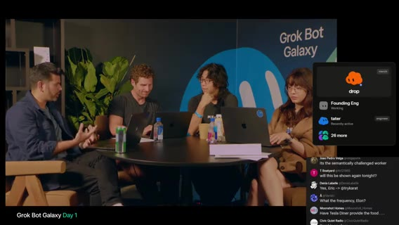
Matt は、pop-up 成果の一般化＝プラットフォームへの意見を Eric に。Eric／Karat: 当初はクリエイター向け銀行・クレジット。YouTuber／ストリーマー等。プリミティブが固まると他ファウンダー／SMBへ拡張。銀行＝預かり＋AI でキャッシュフロー洞察→成長支援（翌年リリース方向）。ビルボード／イベント等の成長支援も。
Cody Sanchez トークへのコールバック: ビジネス成長支援。イベント運営者向けにも同じレンズ。Grok Bot はまず SF の AI 層だが、目標は Joe Plumber 級の SMB が使える UI。自社 dogfood → プリミティブ正しければ人口拡大（Karat と同型）。
クリエイター用途: AI は 正しくかつ検証可能な出力で有用（ChatGPT 由来の信念）。クリエイティブ本体より マネタイズ側（ブランド選定／Outreach／契約／コンテンツ案）を複数ボットで。検証可能ループ（コーディング等）に振る。クロージング。会社は try karat。楽しい、興奮がテイクアウェイ、と退席。
Grok Bot for Founders（Shubh）導入
ステージ切替。発表者（Shubh） は、ファウンダー向けセットアップ最適化の学びとライブデモ。アジェンダ: 文脈→デモ→パワーユーザー tips→Q&A。終了時にボット共有。非ファウンダー／Head of X も有用。AI maturity は、chatbot → ephemeral agents → 長く残る bots（コンパウンド）→ スタッフ機能の自動化。挙手で大半が既利用者。
Grok Bot＝同僚にテキストする感覚。自前コンピュータで MCP／API がなくても作業可。E2E 委任が理想。ファウンダーの3実行軸: focus 保護／velocity 維持／洞察・意思決定の質。邪魔ものを委任、タスクを部分ではなく E2E＋検証まで、情報洪水の整理。
「スケールしないこと」の顧客クローズをボットが大半処理。プロダクト変更の追従ミスを減らす、とユースケース導入。
Close Bot（顧客 E2E）
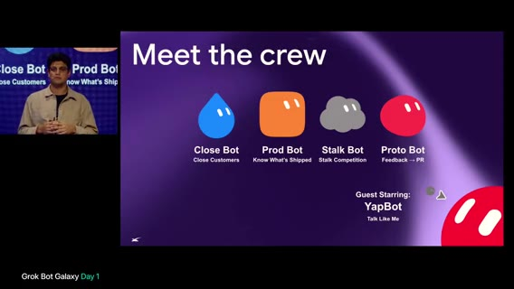
デモ用ボット群紹介: Close（顧客）／Prod（出荷把握）／Stalk（競合）／Proto（デザイン＋FB→PR）＋ゲスト枠。Close Bot のポイント: (1) 洞察を食わせて コンパウンド (2) 自コンピュータでツール操作。
コール準備: テレメトリ／相手リサーチ／サイト walkthrough。デモ顧客 Northwind。無料トライアル行動把握が重要。15–20分のコールで刺さる準備を自動化。日次の HTML コールプレップ例: 相手・プロダクト・サイトSS、バグ／UX問題の見つけ出し（Cookie バナーが Submit を塞ぐ等）で会話の入りを作る。利用グラフで加速／低下を判断。レコメンド／リスク。カレンダー連動ルーチンで毎朝準備。
コール後: Granola 文字起こしを見て刺さった／刺さらなかった機能を学習→次回プレップ改善（2–3週で効く）。サポート自動化: データ＋課金など「渡すのが怖い」接続まで渡すと効く。
Activation は、wow モーメント到達をクレジット等で後押し（デモ例: テンプレ共有で高額クレジット自動メール）。契約往復／アウトバウンド／カレンダーも。楽しさのある顧客対話は意図的に人間が取り戻すことも。
Prod Bot → Stalk Bot
Prod Bot は、出荷／取り下げの把握。デモは Flylo 日次 rundown。PR／Linear に加え、ログインしてサイトを自分で辿り変更を体験マッピング。メトリクス接続で効果も。スクリーンショット＋操作動画で検証高速化。「Worth a decision」的な微決定も浮上（画面: search／cabin CTA／QA）。Stalk Bot（競合ストーカー） は、競合を見つけ自律サインアップ→プロダクト通し→rundown。ルーチンでパルス。無音なら通知しない ambient。
例は、ノートアプリ Craft のオンボーディング teardown（HTML／動画、捨てメアド）。 churn 先へのメールは「責任ある範囲で洞察」と注記。Notion も同様（採用情報多め）。終了後テンプレ共有予定。
Proto／Yap／Misc・自己プロダクト化
Proto Bot は、頭の中のアイデアや顧客 FB をプロト化。自前の Grok Bot アカウントで QA／試作。FB チャネル（サポート等）をパイプライン化し PR 起動まで。ボトルネックは意思決定。例: テンプレ共有ボタンが地味→改善作業開始。Yap Bot は、メール／Slack／iMessage 等から話し方を学習し「自分として話す」。他ボットがプロアクティブに呼び込み。機微は下書き。下書きと実送信の差分で改善。
Misc Bot は、ランダム要求のゴミ箱（例: アルバム発売チェック）→他ボットのコンテキスト汚染防止。必要なら Prod 等へ転送。ボット連携: Close→Proto、Prod→Close 等。フレームワーク: 自分をプロダクト化し、楽しい作業も含めレゴを渡して最高レバレッジに集中。
学び・コスト tips・Rapid-fire・Stalk QR
Let bots run free（可能な範囲でアクセス）。エージェントと違い捨てず 投資。スキル／ツールに意図を。1–2時間で一日を棚卸しし委任先を決める。Tips は、browser use は強力だが高コスト→API／既存 IF 優先。一度ブラウザで network を見て API 直叩きへ。最適化もボットに聞け。
Routines は、頻度を監査（15分ごと＝日100回は高い）。webhook／インバウンド信号寄りに。More Rapid-Fire Tips（スライド） は、voice bot／cookies import／expertise でグループ化／skills／他ボット最適化専用ボット。
Stalk Bot の QR を残すので盗んで試して、とクローズ。セグメント境界で切れる。
Founders Q&A・Jenny・Day1 終了
seg09 · ストリーム 8:00–終了
Founders トーク締め → 会場 Q&A 開始
Shubh は、ボット組み合わせの創造性が限界未到達。ファウンダーからのシグナル歓迎。ライブ視聴者は Matt／Lauren／Roshan の cooking へ戻す。会場向けに約15分 Q&A。手を挙げて質問。
セットアップ枠組み・複数マシン・決定論
質問：人間同様に1–2時間セットアップするなら、役割／R&R の作り方は？ 回答：やることの棚卸し→ドメイン別にグループ（finance／customers／marketing）。専門家ボットを好み、CoS 一本化は好み次第（抽象化したい人向け）。XP バー欲しいジョーク。質問：複数コンピュータでのボット管理。 回答：以前は混乱しやすかったが改善中。Mac mini 積み上げ勢向けに投資中。ダメなら個別相談を。
質問：エンタープライズで決定をモデル外の決定論的ポリシーに載せられるか？ 回答：モデル自体は非決定論。回避策は コード化（cloud agents で決定木／関数を書き、毎回それを呼ぶ）。ボット間パーミッションも可だが、ルール＋検証可能コードがベター。
他ツールからの移行・認証・UI vs API
質問：他ツールセットアップのインポート。 回答：(1) 近日共有予定の移行ボット (2) MCP／API を単一 SoT に。1Password MCP、Chrome cookies インポート。認証は未解決箇所あり。一部サービスはボット拒否→エコシステム全体の課題。質問：認証で詰まるとき。 回答：ツールを過度に指定せずボットに解決させる。例: 文字起こしは Granola が取り込みやすさで選んだ。オプティマイザボットが将来 first-party に乗り換え可。Marketplace プラグイン拡充が目標。
質問：API 高コスト／無しのレガシーで UI 操作は API 並みに速くなるか？ 回答：headless／DOM クリックでスクショ判断ループを減らす。computer use モデル改善中。API 超えは難しいが近づけるのが目標。
グループチャット費用・Marketplace・メモリ・Cloud agents
質問：多数ボット＋積極運用での意思決定／トークン。 回答：グループチャットは協調に強いが全員が喋りコスト増。多くは一度タグして別スレの方が良い。モデル選択は cloud agents 側で指定可。「forget X」でコンテキスト掃除も有効。質問：Marketplace ボットの評価。 回答：手作業監査＋ボットによるボット監査。試用と「何をするか」のセットアップ質問で早期選別。
質問：人／アカウント横断でボット同士は会話できるか？ 回答：現状なし、検討中。質問：ローカル実行とボット PC の併用。 回答：Settings で local execution。将来はボット PC 側が本命（並列・リソース）。ローカルは画面ポップや負荷のジレンマ。
質問：全ボット同一メモリ？ 回答：メモリは共有しない。同一 VM 上でインスタンス分離、ファイルシステムは共有（必要なら互いのファイルを読む）。質問：Cursor cloud agents との関係。 回答：first-class 連携。関連コンテキストだけ渡して独立作業→結果復帰。Grok Bot が QA／PR 確認。複雑出荷・モデル厳密制御は cloud agents。オーケストレーションは一度指定すれば上手い。
Q&A 終了。Starbase チャレンジ再プラグ（ぬいぐるみ賞も）。音声切替トラブルのあとスタジオへ。
ゲスト Jenny 導入・22ボット運用
Jenny 紹介: AI を探る女性コミュニティ、VC／テック／コミュニティ、メディア事業。特別ゲスト（赤ちゃん）も。Jenny は、VC・フルタイムクリエイター・メディアに加え育児。約22体の Grok Bot 従業員でエージェンシー（Whisper: Jamil and Media＝幹部ブランド構築）等を並行。
事業は不動産／VC ファンド／メディア／エージェンシー等 約7。Master Chief＝Chief of Staff が横断（テナント／ゲスト、エージェンシー、ブランド提携 inbound 等）。例は、Boxy＝inbox 監視、scribe 系＝Whisper Flow／会議メモ→サブエージェント委任、CFO 系＝簿記・レシート。CoS がグループ会話でプロジェクト起動。
pop-up 現状共有・venue 要件の具体化
チーム: 72時間で事業。IRL pop-up／ローカル接続／仮想参加なども検討中。イベント知見が欲しい。Jenny は、Eric 回の merch 在庫議論を見た。実行スケジュールの進捗は？ → アイデアと候補リストはあるが アウトリーチ未着手、物流未整理。
Jenny は、大規模ピッチ大会の会場経験あり。SF 前提でボット検索前に criteria を厚く。現状: ~100人、倉庫的ギャラリー空間、時期は来月前後（許可次第で延びうる）。CA は許可好き。酒なしで簡略化。食事はホット提供希望。キッチン有無／ケータリング持ち込み可否（SF は preferred vendor 多い）→空間優先なら制約に合わせる。
昼夜未決（夜間クローズ会場あり）。詳細をボットに入れるほど可用性検索が速い。Scout 型 venue ボット推奨。SF は狭く法務も多い。
Event planner 階層・交渉・本番バジェット起動
まず1回の pop-up。人間の event producer を逆エンジニア: planner の下に coordinator 相当ボット。メールで RFP／空き確認。Jenny は衣類リセールボットで入札交渉パラメータ運用中→予算枠を渡せば venue 交渉も可。予算未策定 → 相場のベースライン調査が先。event planner に 本番バジェット雛形（F&B、マーケティング、スタッフ。登録／警備は人間必須）。
ライブでボットに指示: SF シニア event planner、100–200人 pop-up、venue／F&B／staffing、基本 AV（マイク・スピーカー）。マーケティングは一旦外して単純化。可能なら同一会場にベンダーを寄せ、別スカウトを減らす。
Permit ボット・契約レビュー水準・夜通しエージェント
追加2ボット提案: (1) Permit／red tape ボット（SF の法的要件調査。都市ごとに違うので汎用ポリシーボットにも発展）(2) 契約の一次レビュー。弁護士友人談: AI は 二年目ロースクール水準—条文は読めるが現地・業界の「今の通例」は弱い。一次パスに使い人間が上書き。
人間でやり方を作り、AI に逆エンジニア。夜通し向け: Scout が検索・特定・翌朝送信用下書き；招待リスト（例: Meta／Instagram で都市内高フォロワー抽出→下書き）。当日の大規模視聴者もソース候補。Jenny 退席。サイドバー構成のスクショを後で共有予定。「merch 作れ、これは起きる」と激励。残り約48時間で物流、と。
Day1 ラップ・学び・チャレンジ・終了確認
残り約10分（現地 ~5:30）。Day1 はアイデア発散・ピボット複数・ホワイトボード記入。セットアップは進んだ（スライド、Notion、GitHub、Vercel、V1 ランダー等）が ロックイン不足。学び: ideation の難しさ、ゲストの知恵。今夜エージェント稼働中に1–2焦点へ。Jenny 後は SF pop-up の難度を再認識し「正しい問題か」も再考。明日リフレッシュして lock-in。
締め: SF で3日間事業構築（Dreamforce 連動の Galaxy）。Grok Bot Galaxy チャレンジ再告知（テンプレ作成・提出）。映像一瞬ロストしつつ「See you tomorrow」。画面は Grok Bot Galaxy タイトルカード。クリップ終端 ≈8:45:57（playlist 終端／TS 境界）。ストリーム公称総尺 ~31518s（8:45:18）をカバーして END OK。